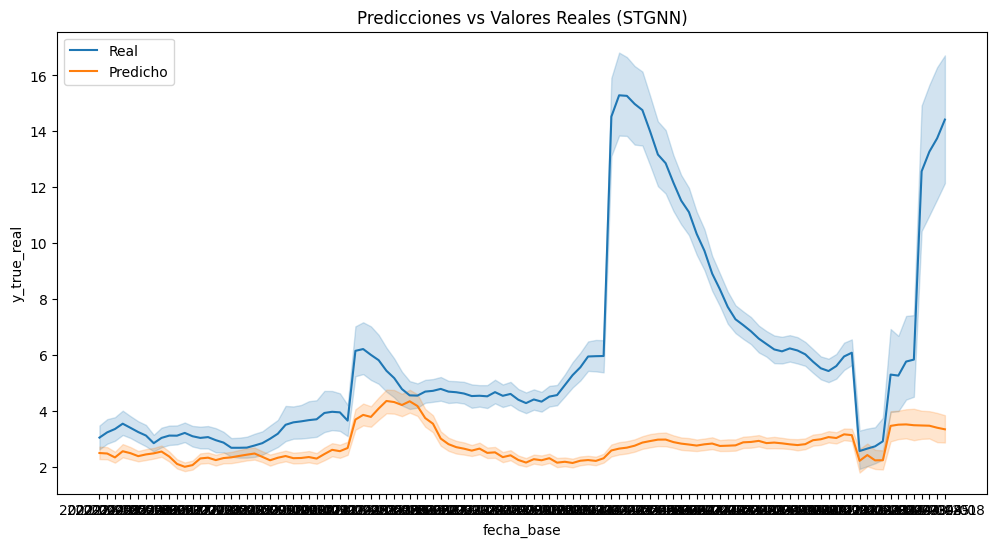
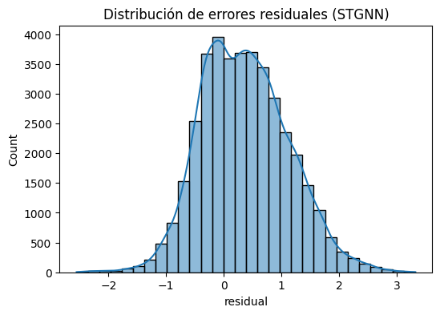
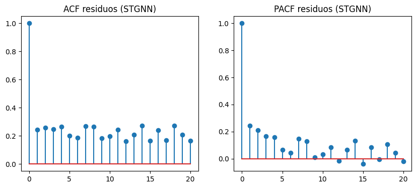
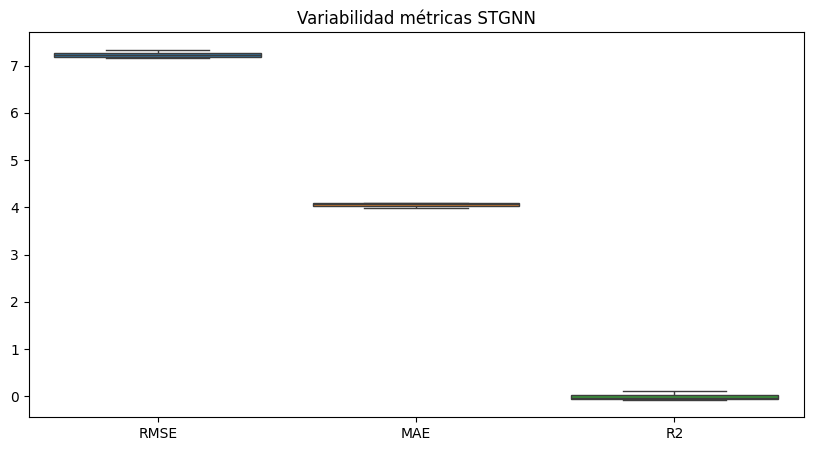
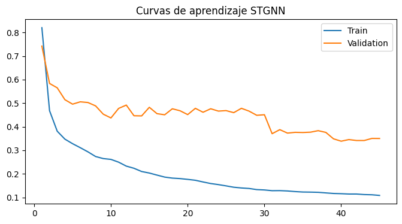
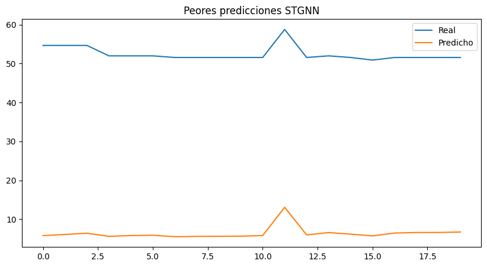

6. STGNN#
6.1. Librerias#
import os
import copy
import random
import optuna
import numpy as np
import pandas as pd
import matplotlib.pyplot as plt
import seaborn as sns
from scipy.stats import ttest_rel, wilcoxon
from statsmodels.stats.diagnostic import acorr_ljungbox
from statsmodels.tsa.stattools import acf, pacf
from sklearn.metrics import mean_squared_error, mean_absolute_error, r2_score
from sklearn.preprocessing import RobustScaler
from sklearn.metrics import (
mean_squared_error,
mean_absolute_error,
r2_score
)
import torch
import torch.nn as nn
import torch.nn.functional as F
from torch.utils.data import (
Dataset,
DataLoader
)
import geopandas as gpd
from libpysal.weights import Queen
import sys
import time
6.2. Configuración Reproducibilidad#
SEEDS = [42, 123, 2024]
DEVICE = torch.device(
"cuda" if torch.cuda.is_available()
else "cpu"
)
print("DEVICE:", DEVICE)
if torch.cuda.is_available():
print("GPU:", torch.cuda.get_device_name(0))
print("Python:", sys.version)
print("Torch:", torch.__version__)
print("Numpy:", np.__version__)
print("Pandas:", pd.__version__)
def set_seed(seed=42):
random.seed(seed)
np.random.seed(seed)
torch.manual_seed(seed)
torch.cuda.manual_seed(seed)
torch.cuda.manual_seed_all(seed)
torch.backends.cudnn.deterministic = True
torch.backends.cudnn.benchmark = False
torch.use_deterministic_algorithms(True)
os.environ["PYTHONHASHSEED"] = str(seed)
print(f"Seed fijada: {seed}")
def seed_worker(worker_id):
worker_seed = torch.initial_seed() % 2**32
np.random.seed(worker_seed)
random.seed(worker_seed)
g = torch.Generator()
DEVICE: cuda
GPU: NVIDIA GeForce RTX 5050 Laptop GPU
Python: 3.10.20 (main, Mar 3 2026, 09:24:47) [GCC 13.3.0]
Torch: 2.11.0+cu130
Numpy: 2.2.6
Pandas: 2.3.3
El entorno de ejecución utiliza PyTorch 2.11 con soporte CUDA 13.0 y una GPU NVIDIA GeForce RTX 5050 Laptop, lo que permite acelerar significativamente el entrenamiento de modelos de deep learning. Además, la configuración de semillas múltiples y versiones recientes de librerías como NumPy y Pandas favorece la reproducibilidad y estabilidad experimental.
Este código implementa una estrategia exhaustiva de reproducibilidad en experimentos con PyTorch, fijando semillas en random, numpy y torch, además de desactivar optimizaciones no deterministas de CUDA (como cudnn.benchmark) para garantizar resultados consistentes entre ejecuciones. Asimismo, se controla la aleatoriedad en los data loaders mediante seed_worker y un generador de PyTorch, asegurando coherencia en el muestreo paralelo de datos.
6.3. Carga de Datos & Preprocesamiento#
6.3.1. Carga de Datos#
df = pd.read_csv("/home/guirlessa/Dl_Proyecto_Dengue/Bases_Datos/df_full.csv")
df.head()
| departamento | fecha_inicio | ano | semana | casos | casos_mujeres | casos_hombres | casos_rural | casos_urbano | (0_5] | ... | precip_lag_12 | precip_lag_20 | temp_c | temp_lag_1 | temp_lag_2 | temp_lag_3 | temp_lag_4 | temp_lag_8 | temp_lag_12 | temp_lag_20 | |
|---|---|---|---|---|---|---|---|---|---|---|---|---|---|---|---|---|---|---|---|---|---|
| 0 | Amazonas | 2012-01-02 | 2012 | 1 | 0.0 | 0 | 0 | 0 | 0 | 0 | ... | 50.983546 | 39.108242 | 24.848668 | 24.890654 | 24.334752 | 24.545618 | 25.345678 | 25.278160 | 25.874930 | 24.364443 |
| 1 | Amazonas | 2012-01-09 | 2012 | 2 | 0.0 | 0 | 0 | 0 | 0 | 0 | ... | 61.818291 | 62.830250 | 24.729721 | 24.848668 | 24.890654 | 24.334752 | 24.545618 | 25.084141 | 25.495665 | 24.971798 |
| 2 | Amazonas | 2012-01-16 | 2012 | 3 | 0.0 | 0 | 0 | 0 | 0 | 0 | ... | 24.950393 | 42.988018 | 24.638674 | 24.729721 | 24.848668 | 24.890654 | 24.334752 | 25.751070 | 25.760539 | 25.304947 |
| 3 | Amazonas | 2012-01-23 | 2012 | 4 | 0.0 | 0 | 0 | 0 | 0 | 0 | ... | 88.169343 | 56.572467 | 25.164008 | 24.638674 | 24.729721 | 24.848668 | 24.890654 | 25.284157 | 25.842089 | 25.166142 |
| 4 | Amazonas | 2012-01-30 | 2012 | 5 | 0.0 | 0 | 0 | 0 | 0 | 0 | ... | 56.271440 | 74.893047 | 24.604644 | 25.164008 | 24.638674 | 24.729721 | 24.848668 | 25.345678 | 25.278160 | 25.312395 |
5 rows × 54 columns
print("El dataframe tiene {0} filas y {1} columnas.".format(df.shape[0], df.shape[1]))
El dataframe tiene 21664 filas y 54 columnas.
df.info()
<class 'pandas.core.frame.DataFrame'>
RangeIndex: 21664 entries, 0 to 21663
Data columns (total 54 columns):
# Column Non-Null Count Dtype
--- ------ -------------- -----
0 departamento 21664 non-null object
1 fecha_inicio 21664 non-null object
2 ano 21664 non-null int64
3 semana 21664 non-null int64
4 casos 21664 non-null float64
5 casos_mujeres 21664 non-null int64
6 casos_hombres 21664 non-null int64
7 casos_rural 21664 non-null int64
8 casos_urbano 21664 non-null int64
9 (0_5] 21664 non-null int64
10 (5_13] 21664 non-null int64
11 (13_26] 21664 non-null int64
12 (26_60] 21664 non-null int64
13 60_mas 21664 non-null int64
14 casos_Contributivo 21664 non-null int64
15 casos_No_asegurado 21664 non-null int64
16 casos_Subsidiado 21664 non-null int64
17 poblacion 21664 non-null float64
18 poblacion_rural 21664 non-null float64
19 poblacion_urbana 21664 non-null float64
20 prop_rural 21664 non-null float64
21 prop_urbana 21664 non-null float64
22 incidencia 21664 non-null float64
23 inc_lag_1 21664 non-null float64
24 inc_lag_2 21664 non-null float64
25 inc_lag_3 21664 non-null float64
26 inc_lag_4 21664 non-null float64
27 inc_lag_8 21664 non-null float64
28 inc_lag_12 21664 non-null float64
29 inc_lag_20 21664 non-null float64
30 humedad_relativa 21664 non-null float64
31 humedad_lag_1 21664 non-null float64
32 humedad_lag_2 21664 non-null float64
33 humedad_lag_3 21664 non-null float64
34 humedad_lag_4 21664 non-null float64
35 humedad_lag_8 21664 non-null float64
36 humedad_lag_12 21664 non-null float64
37 humedad_lag_20 21664 non-null float64
38 precipitacion 21664 non-null float64
39 precip_lag_1 21664 non-null float64
40 precip_lag_2 21664 non-null float64
41 precip_lag_3 21664 non-null float64
42 precip_lag_4 21664 non-null float64
43 precip_lag_8 21664 non-null float64
44 precip_lag_12 21664 non-null float64
45 precip_lag_20 21664 non-null float64
46 temp_c 21664 non-null float64
47 temp_lag_1 21664 non-null float64
48 temp_lag_2 21664 non-null float64
49 temp_lag_3 21664 non-null float64
50 temp_lag_4 21664 non-null float64
51 temp_lag_8 21664 non-null float64
52 temp_lag_12 21664 non-null float64
53 temp_lag_20 21664 non-null float64
dtypes: float64(38), int64(14), object(2)
memory usage: 8.9+ MB
Se observa que la variable fecha_inicio está tipificada como object, cuando en realidad debería corresponder al tipo datetime. Por ello, se procederá a realizar la conversión adecuada para garantizar un manejo correcto de fechas en las etapas posteriores de modelado.
df["fecha_inicio"] = pd.to_datetime(df["fecha_inicio"])
También se procede a organizar los registros del DataFrame según el departamento y la fecha de inicio, con el objetivo de asegurar una estructura temporal coherente que facilite el análisis y el posterior proceso de modelado.
df = df.sort_values(
["departamento", "fecha_inicio"]
).reset_index(drop=True)
6.3.2. Feature Enginering#
Con el fin de incorporar la estacionalidad anual de la enfermedad, se construyeron las variables cíclicas week_sin y week_cos a partir de la semana epidemiológica normalizada. Esta transformación permite representar la naturaleza periódica del calendario, preservando la continuidad entre el final y el inicio de cada año, y facilitando que los modelos capturen patrones estacionales recurrentes asociados a la transmisión del dengue.
weeks_per_year = df.groupby("ano")["semana"].transform("max")
df["week_norm"] = df["semana"] / weeks_per_year
df["week_sin"] = np.sin(2 * np.pi * df["week_norm"])
df["week_cos"] = np.cos(2 * np.pi * df["week_norm"])
Este conjunto de FEATURES define el espacio de variables utilizado para el modelado, combinando información temporal, climática y sociodemográfica. En particular, se incorporan múltiples rezagos (lags) de la incidencia y variables meteorológicas (temperatura, humedad y precipitación) para capturar dependencias temporales y efectos retardados, junto con variables estructurales como población y proporción rural. Adicionalmente, las componentes cíclicas week_sin y week_cos permiten modelar la estacionalidad semanal de forma continua, evitando discontinuidades propias de una codificación directa del tiempo.
FEATURES = [
"inc_lag_1",
"inc_lag_2",
"inc_lag_3",
"inc_lag_4",
"inc_lag_8",
"inc_lag_12",
"inc_lag_20",
"temp_lag_1",
"temp_lag_2",
"temp_lag_4",
"temp_lag_8",
"temp_lag_12",
"temp_lag_20",
"humedad_lag_1",
"humedad_lag_2",
"humedad_lag_4",
"humedad_lag_8",
"humedad_lag_12",
"humedad_lag_20",
"precip_lag_1",
"precip_lag_2",
"precip_lag_4",
"precip_lag_8",
"precip_lag_12",
"precip_lag_20",
"poblacion",
"prop_rural",
"week_sin",
"week_cos"
]
Asimismo, durante el análisis exploratorio de datos se observó que la variable de incidencia presentaba una distribución fuertemente asimétrica hacia la derecha, caracterizada por la presencia de valores extremos asociados a periodos epidémicos. Debido a ello, se consideró necesario aplicar una transformación logarítmica con el objetivo de reducir la asimetría, estabilizar la varianza y facilitar que los modelos capturen de manera más adecuada la estructura temporal y los patrones subyacentes de la incidencia del dengue.
df["incidencia_log"] = np.log1p(df["incidencia"])
TARGET = "incidencia_log"
Con el fin de evaluar el efecto de la transformación logarítmica, se compararon las distribuciones de la incidencia antes y después del preprocesamiento. La distribución original presentaba una marcada asimetría positiva y una alta concentración de valores extremos asociados a periodos epidémicos. Tras aplicar la transformación logarítmica (log1p), se observó una reducción significativa del sesgo y una distribución más equilibrada, lo que contribuye a estabilizar la varianza y facilita la identificación de patrones temporales por parte de los modelos predictivos.
fig, axes = plt.subplots(1, 2, figsize=(14, 5))
sns.histplot(
df["incidencia"],
kde=True,
ax=axes[0]
)
axes[0].set_title("Incidencia Original")
sns.histplot(
np.log1p(df["incidencia"]),
kde=True,
ax=axes[1]
)
axes[1].set_title("Incidencia Transformada (log1p)")
plt.tight_layout()
plt.show()
fig, axes = plt.subplots(1, 2, figsize=(12, 5))
sns.boxplot(y=df["incidencia"], ax=axes[0])
axes[0].set_title("Original")
sns.boxplot(y=np.log1p(df["incidencia"]), ax=axes[1])
axes[1].set_title("Log1p")
plt.tight_layout()
plt.show()


6.3.3. Grafo Espacial#
departments = sorted(df["departamento"].unique())
dept_to_idx = {d: i for i, d in enumerate(departments)}
idx_to_dept = {i: d for d, i in dept_to_idx.items()}
NUM_NODES = len(departments)
gdf = gpd.read_file(
"/home/guirlessa/Dl_Proyecto_Dengue/Covariables/MGN_ADM_DPTO_POLITICO/MGN_ADM_DPTO_POLITICO_limpio.shp"
)
gdf = gdf.set_index("dpto_cnmbr").loc[departments].reset_index()
def build_queen_adj(gdf, departments):
w = Queen.from_dataframe(gdf)
adj = np.zeros(
(len(departments), len(departments)),
dtype=np.float32
)
for i, neighbors in w.neighbors.items():
for j in neighbors:
adj[i, j] = 1.0
np.fill_diagonal(adj, 1.0)
return adj
def normalize_adj(adj):
D = np.diag(np.power(adj.sum(axis=1), -0.5))
return (D @ adj @ D).astype(np.float32)
adj_raw = build_queen_adj(gdf, departments)
adj_normalized = normalize_adj(adj_raw)
adj_matrix = torch.tensor(
adj_normalized,
dtype=torch.float32
).to(DEVICE)
/tmp/ipykernel_109630/1012815684.py:26: FutureWarning: `use_index` defaults to False but will default to True in future. Set True/False directly to control this behavior and silence this warning
w = Queen.from_dataframe(gdf)
6.3.4. Normaización de los Datos#
Se plantea la función scale_data con el fin de aplicar una normalización robusta (RobustScaler) a los datos de entrenamiento y validación, para así preservar la estructura original de series temporales multivariadas. Para ello, primero reestructura los tensores a dos dimensiones para ajustar el escalador únicamente sobre el conjunto de entrenamiento, evitando data leakage, y luego transforma ambos conjuntos antes de devolverlos a su forma original.
def scale_data(X_train, X_val):
scaler = RobustScaler()
_, _, _, n_features = X_train.shape
X_train_2d = X_train.reshape(-1, n_features)
scaler.fit(X_train_2d)
X_train_scaled = scaler.transform(X_train_2d).reshape(X_train.shape)
X_val_scaled = scaler.transform(
X_val.reshape(-1, n_features)
).reshape(X_val.shape)
return X_train_scaled, X_val_scaled, scaler
6.4. Esquema de validación temporal#
Se implementa un esquema de validación cruzada temporal anidada (nested time series cross-validation), en el cual los datos se dividen respetando estrictamente el orden cronológico para evitar data leakage. En el nivel externo, se definen particiones de entrenamiento y prueba por año (2022–2024), simulando un escenario real de predicción futura; mientras que en el nivel interno, el conjunto de entrenamiento se subdivide nuevamente en conjuntos de entrenamiento y validación (2019–2021) para ajuste de hiperparámetros y selección de modelos. Este enfoque garantiza una evaluación más robusta y realista al emular la dinámica de predicción en series temporales.
def create_outer_folds(df, date_col="fecha_inicio"):
folds = []
outer_years = [2022, 2023, 2024]
for test_year in outer_years:
train_df = df[df[date_col].dt.year < test_year].copy()
test_df = df[df[date_col].dt.year == test_year].copy()
folds.append({
"test_year": test_year,
"train_df": train_df,
"test_df": test_df
})
return folds
outer_folds = create_outer_folds(df)
def create_inner_folds(train_df, val_years=[2019, 2020, 2021]):
inner_folds = []
for val_year in val_years:
inner_train = train_df[
train_df["fecha_inicio"].dt.year < val_year
].copy()
inner_val = train_df[
train_df["fecha_inicio"].dt.year == val_year
].copy()
inner_folds.append({
"val_year": val_year,
"inner_train": inner_train,
"inner_val": inner_val
})
return inner_folds
6.5. Ventanas de Tiempo#
Esta función implementa la construcción del conjunto de datos supervisado para modelado espaciotemporal, mediante la transformación de datos tabulares en tensores estructurados compatibles con arquitecturas de aprendizaje profundo. En primer lugar, reorganiza las variables explicativas y la variable objetivo a través de tablas pivote indexadas por fecha y departamento, asegurando consistencia en la representación espacial. Posteriormente, se unifican las variables en un tensor multivariado y se genera una estructura de secuencias mediante una estrategia de ventanas deslizantes (sliding windows), en la que se define explícitamente un historial de observación (window_size) y un horizonte de predicción (horizon). Finalmente, se preserva información auxiliar como las fechas de referencia y el orden de los departamentos, lo cual es fundamental para mantener la coherencia temporal y espacial del conjunto de datos.
def create_windows(
df,
features,
target,
window_size=12,
horizon=4
):
pivot_features = []
for feat in features:
pivot = df.pivot_table(
index="fecha_inicio",
columns="departamento",
values=feat
).sort_index()
pivot_features.append(pivot.values)
X_all = np.stack(pivot_features, axis=-1)
target_pivot = df.pivot_table(
index="fecha_inicio",
columns="departamento",
values=target
).sort_index()
y_all = target_pivot.values
dates = target_pivot.index.values
X = []
y = []
base_dates = []
total_steps = len(dates)
for i in range(total_steps - window_size - horizon + 1):
X.append(X_all[i : i + window_size])
y.append(y_all[i + window_size : i + window_size + horizon])
base_dates.append(dates[i + window_size - 1])
X = np.array(X, dtype=np.float32)
y = np.array(y, dtype=np.float32)
base_dates = np.array(base_dates)
return X, y, base_dates
6.6. Funciones para el Modelado#
La clase EarlyStopping introduce un mecanismo de regularización basado en la detención anticipada del entrenamiento cuando la pérdida de validación deja de mejorar durante un número determinado de épocas (patience), lo cual ayuda a prevenir sobreajuste.
class EarlyStopping:
def __init__(self, patience=20):
self.patience = patience
self.best_loss = np.inf
self.counter = 0
self.stop = False
def step(self, val_loss):
if val_loss < self.best_loss:
self.best_loss = val_loss
self.counter = 0
else:
self.counter += 1
if self.counter >= self.patience:
self.stop = True
Por otro lado, train_one_epoch y validate_one_epoch definen los ciclos estándar de entrenamiento y evaluación por época, respectivamente: la primera realiza la optimización del modelo mediante retropropagación del error, actualización de parámetros y recorte de gradientes para estabilizar el aprendizaje, mientras que la segunda evalúa el desempeño del modelo en modo inferencia sin actualización de pesos, permitiendo monitorear su generalización.
def train_one_epoch(model, dataloader, criterion, optimizer, device):
model.train()
total_loss = 0
for X_batch, y_batch in dataloader:
X_batch = X_batch.to(device)
y_batch = y_batch.to(device)
optimizer.zero_grad()
pred = model(X_batch, adj_matrix)
loss = criterion(pred, y_batch)
loss.backward()
nn.utils.clip_grad_norm_(model.parameters(), max_norm=1.0)
optimizer.step()
total_loss += loss.item()
return total_loss / len(dataloader)
def validate_one_epoch(model, dataloader, criterion, device):
model.eval()
total_loss = 0
with torch.no_grad():
for X_batch, y_batch in dataloader:
X_batch = X_batch.to(device)
y_batch = y_batch.to(device)
pred = model(X_batch, adj_matrix)
loss = criterion(pred, y_batch)
total_loss += loss.item()
return total_loss / len(dataloader)
6.7. Arquitectura#
class Dataset(Dataset):
def __init__(self, X, y):
self.X = torch.tensor(X, dtype=torch.float32)
self.y = torch.tensor(y, dtype=torch.float32)
def __len__(self):
return len(self.X)
def __getitem__(self, idx):
return self.X[idx], self.y[idx]
class GraphConvolution(nn.Module):
def __init__(self, in_features, out_features):
super().__init__()
self.linear = nn.Linear(in_features, out_features)
def forward(self, x, adj):
"""
x: (batch, nodes, features)
adj: (nodes, nodes)
"""
x = torch.matmul(adj, x)
return self.linear(x)
class STGNN(nn.Module):
def __init__(
self,
num_nodes,
in_channels,
hidden_size=64,
horizon=4,
dropout=0.1
):
super().__init__()
self.num_nodes = num_nodes
self.hidden_size = hidden_size
self.horizon = horizon
# -------- Spatial --------
self.gcn1 = GraphConvolution(in_channels, hidden_size)
self.gcn2 = GraphConvolution(hidden_size, hidden_size)
# -------- Temporal --------
self.lstm = nn.LSTM(
input_size=hidden_size * num_nodes,
hidden_size=hidden_size,
num_layers=1,
batch_first=True
)
self.dropout = nn.Dropout(dropout)
# -------- Output --------
self.head = nn.Linear(hidden_size, horizon * num_nodes)
def forward(self, x, adj):
"""
x: (B, T, N, F)
"""
B, T, N, F = x.shape
spatial_out = []
# -------- temporal loop --------
for t in range(T):
x_t = x[:, t, :, :] # (B, N, F)
x_t = torch.relu(self.gcn1(x_t, adj))
x_t = torch.relu(self.gcn2(x_t, adj))
spatial_out.append(x_t)
# (B, T, N, H)
x = torch.stack(spatial_out, dim=1)
# flatten nodes
x = x.reshape(B, T, N * self.hidden_size)
# temporal modeling
out, _ = self.lstm(x)
out = self.dropout(out[:, -1, :]) # last step
out = self.head(out)
# reshape to (B, horizon, nodes)
out = out.view(B, self.horizon, N)
return out
6.8. Optimización de Hiperparametros#
Inicializamos el entorno experimental del pipeline de optimización y evaluación del modelo, definiendo estructuras globales para almacenar resultados de múltiples etapas del experimento (tuning, validación cruzada, entrenamiento y evaluación final).
ALL_OPTUNA_TRIALS = []
ALL_OPTUNA_FOLDS = []
ALL_RESIDUALS = []
ALL_INFERENCE_TIME = []
ALL_BEST_PARAMS = []
ALL_RESULTS = []
ALL_PREDICTIONS = []
ALL_LOSSES = []
TUNING_DF = df[df["fecha_inicio"].dt.year < 2022].copy()
INNER_FOLDS_TUNING = create_inner_folds(
TUNING_DF,
val_years=[2019, 2020, 2021]
)
Ahora, definimos objetivo de optimización para el ajuste de hiperparámetros mediante Optuna, evaluando distintas configuraciones del modelo STGNN. Para cada trial, se muestrean hiperparámetros como tamaño de ventana, tasa de aprendizaje, tamaño de lote, número de capas, unidades ocultas, tamaño de kernel y dropout, y se evalúan mediante validación cruzada en los inner folds. En cada partición se entrena el modelo, se aplica early stopping y se calcula el RMSE sobre el conjunto de validación, retornando finalmente el error promedio como métrica a minimizar.
def objective(trial):
window_size = trial.suggest_categorical(
"window_size", [4, 8, 12, 16]
)
learning_rate = trial.suggest_float(
"learning_rate", 1e-4, 1e-2, log=True
)
batch_size = trial.suggest_categorical(
"batch_size", [16, 32]
)
hidden_size = trial.suggest_categorical(
"hidden_size", [32, 64, 128]
)
num_layers = trial.suggest_int(
"num_layers", 1, 3
)
kernel_size = trial.suggest_categorical(
"kernel_size", [3, 5, 7]
)
dropout = trial.suggest_float(
"dropout", 0.0, 0.4, step=0.1
)
rmse_folds = []
fold_errors = []
for fold_id, fold in enumerate(INNER_FOLDS_TUNING):
X_train, y_train, _ = create_windows(
fold["inner_train"],
FEATURES,
TARGET,
window_size,
4
)
X_val, y_val, _ = create_windows(
fold["inner_val"],
FEATURES,
TARGET,
window_size,
4
)
X_train_scaled, X_val_scaled, _ = scale_data(X_train, X_val)
train_dataset = Dataset(X_train_scaled, y_train)
val_dataset = Dataset(X_val_scaled, y_val)
g.manual_seed(seed)
train_loader = DataLoader(
train_dataset,
batch_size=batch_size,
shuffle=False,
worker_init_fn=seed_worker,
generator=g
)
val_loader = DataLoader(
val_dataset,
batch_size=batch_size,
shuffle=False
)
model = STGNN(
num_nodes=NUM_NODES,
in_channels=len(FEATURES),
hidden_size=hidden_size,
horizon=4,
dropout=dropout
).to(DEVICE)
criterion = nn.MSELoss()
optimizer = torch.optim.Adam(
model.parameters(),
lr=learning_rate
)
early_stopping = EarlyStopping(patience=10)
for epoch in range(50):
train_one_epoch(
model, train_loader, criterion, optimizer, DEVICE
)
val_loss = validate_one_epoch(
model, val_loader, criterion, DEVICE
)
early_stopping.step(val_loss)
if early_stopping.stop:
break
model.eval()
preds = []
trues = []
with torch.no_grad():
for X_batch, y_batch in val_loader:
pred = model(X_batch.to(DEVICE), adj_matrix)
preds.append(pred.cpu().numpy())
trues.append(y_batch.numpy())
preds = np.concatenate(preds)
trues = np.concatenate(trues)
errors = trues - preds
rmse = np.sqrt(
mean_squared_error(trues.flatten(), preds.flatten())
)
rmse_folds.append(rmse)
fold_errors.append({
"trial": trial.number,
"seed": seed,
"fold": fold_id,
"rmse": rmse,
"error_mean": float(np.mean(errors)),
"error_std": float(np.std(errors))
})
rmse_mean = float(np.mean(rmse_folds))
rmse_std = float(np.std(rmse_folds))
ALL_OPTUNA_TRIALS.append({
"trial": trial.number,
"seed": seed,
"window_size": window_size,
"learning_rate": learning_rate,
"batch_size": batch_size,
"hidden_size": hidden_size,
"num_layers": num_layers,
"kernel_size": kernel_size,
"dropout": dropout,
"rmse_mean": rmse_mean,
"rmse_std": rmse_std
})
ALL_OPTUNA_FOLDS.extend(fold_errors)
trial.set_user_attr("rmse_folds", rmse_folds)
trial.set_user_attr("rmse_std", rmse_std)
return rmse_mean
6.9. Pipeline Train, Validation & Test#
Ahora se procede a ejecutar el ciclo completo de entrenamiento, optimización y evaluación del modelo STGNN bajo un esquema de validación cruzada temporal anidada. En este proceso, se realiza la búsqueda de hiperparámetros mediante Optuna para cada semilla, seguida del entrenamiento del modelo en los outer folds utilizando la mejor configuración obtenida. Finalmente, se evalúa el desempeño en el conjunto de prueba mediante métricas de error, registrando adicionalmente tiempos de entrenamiento e inferencia, así como predicciones y residuos para su análisis detallado posterior.
for seed in SEEDS:
print("\n")
print("="*100)
print(f"SEED {seed}")
print("="*100)
set_seed(seed)
sampler = optuna.samplers.TPESampler(seed=seed)
study = optuna.create_study(
direction="minimize",
sampler=sampler
)
study.optimize(objective, n_trials=30)
best_params = study.best_trial.params
print(f"\nMejores hiperparámetros para seed {seed}:")
print(best_params)
pd.DataFrame([{"seed": seed, **best_params}]).to_csv(
f"/home/guirlessa/Dl_Proyecto_Dengue/Modelos/STGNN/stgnn_best_params_seed_{seed}.csv",
index=False
)
ALL_BEST_PARAMS.append({"seed": seed, **best_params})
for outer_idx, outer_fold in enumerate(outer_folds):
print("\n")
print("="*100)
print(f"OUTER FOLD {outer_idx+1} | Test year: {outer_fold['test_year']}")
print("="*100)
outer_train_df = outer_fold["train_df"]
final_test_df = outer_fold["test_df"]
window_size = best_params["window_size"]
hidden_size = best_params["hidden_size"]
num_layers = best_params["num_layers"]
kernel_size = best_params["kernel_size"]
dropout = best_params["dropout"]
learning_rate = best_params["learning_rate"]
batch_size = best_params["batch_size"]
val_year = outer_train_df["fecha_inicio"].dt.year.max()
final_train_df = outer_train_df[
outer_train_df["fecha_inicio"].dt.year < val_year
]
final_val_df = outer_train_df[
outer_train_df["fecha_inicio"].dt.year == val_year
]
X_train, y_train, train_dates = create_windows(
final_train_df, FEATURES, TARGET, window_size, 4
)
X_val, y_val, val_dates = create_windows(
final_val_df, FEATURES, TARGET, window_size, 4
)
X_test, y_test, test_dates = create_windows(
final_test_df, FEATURES, TARGET, window_size, 4
)
X_train_scaled, X_val_scaled, scaler = scale_data(X_train, X_val)
X_test_scaled = scaler.transform(
X_test.reshape(-1, X_test.shape[-1])
).reshape(X_test.shape)
train_dataset = Dataset(X_train_scaled, y_train)
val_dataset = Dataset(X_val_scaled, y_val)
test_dataset = Dataset(X_test_scaled, y_test)
train_loader = DataLoader(train_dataset, batch_size=batch_size, shuffle=False)
val_loader = DataLoader(val_dataset, batch_size=batch_size, shuffle=False)
test_loader = DataLoader(test_dataset, batch_size=batch_size, shuffle=False)
model = STGNN(
num_nodes=NUM_NODES,
in_channels=len(FEATURES),
hidden_size=hidden_size,
horizon=4,
dropout=dropout
).to(DEVICE)
criterion = nn.MSELoss()
optimizer = torch.optim.Adam(
model.parameters(),
lr=learning_rate
)
scheduler = torch.optim.lr_scheduler.ReduceLROnPlateau(
optimizer, mode="min", factor=0.5, patience=10
)
early_stopping = EarlyStopping(patience=20)
best_model = None
best_loss = np.inf
total_train_time = 0.0
for epoch in range(300):
start_epoch = time.time()
train_loss = train_one_epoch(
model, train_loader, criterion, optimizer, DEVICE
)
val_loss = validate_one_epoch(
model, val_loader, criterion, DEVICE
)
scheduler.step(val_loss)
epoch_time = time.time() - start_epoch
total_train_time += epoch_time
print(
f"Epoch {epoch+1}"
f" | Train {train_loss:.4f}"
f" | Val {val_loss:.4f}"
f" | Time {epoch_time:.2f}s"
)
ALL_LOSSES.append({
"seed": seed,
"outer_fold": outer_idx + 1,
"test_year": outer_fold["test_year"],
"epoch": epoch + 1,
"train_loss": train_loss,
"val_loss": val_loss,
"epoch_time": epoch_time
})
if val_loss < best_loss:
best_loss = val_loss
best_model = copy.deepcopy(model)
early_stopping.step(val_loss)
if early_stopping.stop:
break
model = best_model
torch.save(
model.state_dict(),
f"/home/guirlessa/Dl_Proyecto_Dengue/Modelos/STGNN/"
f"stgnn_seed_{seed}_outer_fold_{outer_idx+1}.pt"
)
model.eval()
start_inference = time.time()
predictions = []
targets = []
with torch.no_grad():
for X_batch, y_batch in test_loader:
X_batch = X_batch.to(DEVICE)
pred = model(X_batch, adj_matrix)
predictions.append(pred.cpu().numpy())
targets.append(y_batch.numpy())
inference_time = time.time() - start_inference
predictions = np.concatenate(predictions)
targets = np.concatenate(targets)
mse = mean_squared_error(targets.flatten(), predictions.flatten())
rmse = np.sqrt(mse)
mae = mean_absolute_error(targets.flatten(), predictions.flatten())
r2 = r2_score(targets.flatten(), predictions.flatten())
ALL_RESULTS.append({
"seed": seed,
"outer_fold": outer_idx + 1,
"test_year": outer_fold["test_year"],
"mse": mse,
"rmse": rmse,
"mae": mae,
"r2": r2,
"train_time": total_train_time,
"inference_time": inference_time
})
ALL_INFERENCE_TIME.append({
"seed": seed,
"outer_fold": outer_idx + 1,
"test_year": outer_fold["test_year"],
"inference_time": inference_time,
"train_time": total_train_time
})
rows = []
for i in range(len(predictions)):
for h in range(4):
for node in range(NUM_NODES):
y_true = targets[i, h, node]
y_pred = predictions[i, h, node]
residual = y_true - y_pred
rows.append({
"seed": seed,
"outer_fold": outer_idx + 1,
"test_year": outer_fold["test_year"],
"departamento": idx_to_dept[node],
"fecha_base": test_dates[i],
"horizonte": h + 1,
"y_true_log": y_true,
"y_pred_log": y_pred,
"y_true_real": np.expm1(y_true),
"y_pred_real": np.expm1(y_pred),
"residual": residual,
"abs_error": abs(residual),
"sq_error": residual ** 2
})
ALL_RESIDUALS.append({
"seed": seed,
"outer_fold": outer_idx + 1,
"test_year": outer_fold["test_year"],
"departamento": idx_to_dept[node],
"fecha_base": test_dates[i],
"horizonte": h + 1,
"residual": residual
})
ALL_PREDICTIONS.append(pd.DataFrame(rows))
[I 2026-06-01 15:11:17,741] A new study created in memory with name: no-name-186847fd-dc11-427a-b64b-1fc8d69ee714
====================================================================================================
SEED 42
====================================================================================================
Seed fijada: 42
[I 2026-06-01 15:11:38,706] Trial 0 finished with value: 0.7020738918478192 and parameters: {'window_size': 8, 'learning_rate': 0.0002051338263087451, 'batch_size': 16, 'hidden_size': 32, 'num_layers': 1, 'kernel_size': 3, 'dropout': 0.0}. Best is trial 0 with value: 0.7020738918478192.
[I 2026-06-01 15:11:59,595] Trial 1 finished with value: 0.6843161100453679 and parameters: {'window_size': 12, 'learning_rate': 0.0003823475224675188, 'batch_size': 16, 'hidden_size': 128, 'num_layers': 3, 'kernel_size': 7, 'dropout': 0.0}. Best is trial 1 with value: 0.6843161100453679.
[I 2026-06-01 15:12:23,079] Trial 2 finished with value: 0.8042434475465106 and parameters: {'window_size': 16, 'learning_rate': 0.00853618986286683, 'batch_size': 16, 'hidden_size': 64, 'num_layers': 1, 'kernel_size': 7, 'dropout': 0.1}. Best is trial 1 with value: 0.6843161100453679.
[I 2026-06-01 15:12:43,001] Trial 3 finished with value: 0.6872289199381351 and parameters: {'window_size': 4, 'learning_rate': 0.00023426581058204064, 'batch_size': 16, 'hidden_size': 32, 'num_layers': 3, 'kernel_size': 5, 'dropout': 0.1}. Best is trial 1 with value: 0.6843161100453679.
[I 2026-06-01 15:13:00,964] Trial 4 finished with value: 0.6531099211358199 and parameters: {'window_size': 12, 'learning_rate': 0.0003646439558980723, 'batch_size': 16, 'hidden_size': 128, 'num_layers': 3, 'kernel_size': 7, 'dropout': 0.30000000000000004}. Best is trial 4 with value: 0.6531099211358199.
[I 2026-06-01 15:13:23,596] Trial 5 finished with value: 0.6892901153255121 and parameters: {'window_size': 8, 'learning_rate': 0.0001705053926026929, 'batch_size': 16, 'hidden_size': 32, 'num_layers': 1, 'kernel_size': 7, 'dropout': 0.2}. Best is trial 4 with value: 0.6531099211358199.
[I 2026-06-01 15:13:31,829] Trial 6 finished with value: 0.6148429280736591 and parameters: {'window_size': 12, 'learning_rate': 0.003482846706526885, 'batch_size': 32, 'hidden_size': 32, 'num_layers': 1, 'kernel_size': 3, 'dropout': 0.4}. Best is trial 6 with value: 0.6148429280736591.
[I 2026-06-01 15:13:58,422] Trial 7 finished with value: 0.6985052125450247 and parameters: {'window_size': 12, 'learning_rate': 0.00014254757044027455, 'batch_size': 16, 'hidden_size': 32, 'num_layers': 3, 'kernel_size': 7, 'dropout': 0.2}. Best is trial 6 with value: 0.6148429280736591.
[I 2026-06-01 15:14:11,017] Trial 8 finished with value: 0.6539274884641356 and parameters: {'window_size': 8, 'learning_rate': 0.000285673742984719, 'batch_size': 32, 'hidden_size': 32, 'num_layers': 2, 'kernel_size': 7, 'dropout': 0.4}. Best is trial 6 with value: 0.6148429280736591.
[I 2026-06-01 15:14:27,332] Trial 9 finished with value: 0.7734438711823665 and parameters: {'window_size': 12, 'learning_rate': 0.008781408196485976, 'batch_size': 16, 'hidden_size': 32, 'num_layers': 1, 'kernel_size': 3, 'dropout': 0.1}. Best is trial 6 with value: 0.6148429280736591.
[I 2026-06-01 15:14:39,617] Trial 10 finished with value: 0.6304695397611421 and parameters: {'window_size': 16, 'learning_rate': 0.002510441004250465, 'batch_size': 32, 'hidden_size': 64, 'num_layers': 2, 'kernel_size': 3, 'dropout': 0.4}. Best is trial 6 with value: 0.6148429280736591.
[I 2026-06-01 15:14:50,275] Trial 11 finished with value: 0.6331783361527528 and parameters: {'window_size': 16, 'learning_rate': 0.003085473344630512, 'batch_size': 32, 'hidden_size': 64, 'num_layers': 2, 'kernel_size': 3, 'dropout': 0.4}. Best is trial 6 with value: 0.6148429280736591.
[I 2026-06-01 15:15:01,952] Trial 12 finished with value: 0.62203872637778 and parameters: {'window_size': 16, 'learning_rate': 0.0017522967285273662, 'batch_size': 32, 'hidden_size': 64, 'num_layers': 2, 'kernel_size': 3, 'dropout': 0.4}. Best is trial 6 with value: 0.6148429280736591.
[I 2026-06-01 15:15:07,186] Trial 13 finished with value: 0.6576212034053087 and parameters: {'window_size': 4, 'learning_rate': 0.0012228319210925516, 'batch_size': 32, 'hidden_size': 64, 'num_layers': 2, 'kernel_size': 3, 'dropout': 0.30000000000000004}. Best is trial 6 with value: 0.6148429280736591.
[I 2026-06-01 15:15:18,870] Trial 14 finished with value: 0.6147893672664527 and parameters: {'window_size': 16, 'learning_rate': 0.0027324685838808938, 'batch_size': 32, 'hidden_size': 64, 'num_layers': 1, 'kernel_size': 5, 'dropout': 0.30000000000000004}. Best is trial 14 with value: 0.6147893672664527.
[I 2026-06-01 15:15:25,188] Trial 15 finished with value: 0.7809224198820427 and parameters: {'window_size': 12, 'learning_rate': 0.004759817476669027, 'batch_size': 32, 'hidden_size': 128, 'num_layers': 1, 'kernel_size': 5, 'dropout': 0.30000000000000004}. Best is trial 14 with value: 0.6147893672664527.
[I 2026-06-01 15:15:40,986] Trial 16 finished with value: 0.6292027151299981 and parameters: {'window_size': 16, 'learning_rate': 0.0006309012658288583, 'batch_size': 32, 'hidden_size': 64, 'num_layers': 1, 'kernel_size': 5, 'dropout': 0.30000000000000004}. Best is trial 14 with value: 0.6147893672664527.
[I 2026-06-01 15:15:49,472] Trial 17 finished with value: 0.6478456892722543 and parameters: {'window_size': 4, 'learning_rate': 0.005028744525212851, 'batch_size': 32, 'hidden_size': 64, 'num_layers': 1, 'kernel_size': 5, 'dropout': 0.2}. Best is trial 14 with value: 0.6147893672664527.
[I 2026-06-01 15:16:05,612] Trial 18 finished with value: 0.6432085313912687 and parameters: {'window_size': 12, 'learning_rate': 0.0008118911617116417, 'batch_size': 32, 'hidden_size': 32, 'num_layers': 1, 'kernel_size': 5, 'dropout': 0.30000000000000004}. Best is trial 14 with value: 0.6147893672664527.
[I 2026-06-01 15:16:17,418] Trial 19 finished with value: 0.6278960706404259 and parameters: {'window_size': 16, 'learning_rate': 0.0014857182261913736, 'batch_size': 32, 'hidden_size': 128, 'num_layers': 2, 'kernel_size': 5, 'dropout': 0.4}. Best is trial 14 with value: 0.6147893672664527.
[I 2026-06-01 15:16:28,296] Trial 20 finished with value: 0.6322586696448353 and parameters: {'window_size': 16, 'learning_rate': 0.003917034330357435, 'batch_size': 32, 'hidden_size': 64, 'num_layers': 1, 'kernel_size': 3, 'dropout': 0.30000000000000004}. Best is trial 14 with value: 0.6147893672664527.
[I 2026-06-01 15:16:44,328] Trial 21 finished with value: 0.6255923329945244 and parameters: {'window_size': 16, 'learning_rate': 0.0020219450031240776, 'batch_size': 32, 'hidden_size': 64, 'num_layers': 2, 'kernel_size': 3, 'dropout': 0.4}. Best is trial 14 with value: 0.6147893672664527.
[I 2026-06-01 15:16:56,518] Trial 22 finished with value: 0.6236787608368272 and parameters: {'window_size': 16, 'learning_rate': 0.0019061388199146001, 'batch_size': 32, 'hidden_size': 64, 'num_layers': 2, 'kernel_size': 3, 'dropout': 0.4}. Best is trial 14 with value: 0.6147893672664527.
[I 2026-06-01 15:17:14,288] Trial 23 finished with value: 0.6513475171604781 and parameters: {'window_size': 16, 'learning_rate': 0.00605531519923004, 'batch_size': 32, 'hidden_size': 64, 'num_layers': 1, 'kernel_size': 3, 'dropout': 0.4}. Best is trial 14 with value: 0.6147893672664527.
[I 2026-06-01 15:17:30,950] Trial 24 finished with value: 0.6386704585638151 and parameters: {'window_size': 16, 'learning_rate': 0.0008295213459645249, 'batch_size': 32, 'hidden_size': 64, 'num_layers': 1, 'kernel_size': 3, 'dropout': 0.30000000000000004}. Best is trial 14 with value: 0.6147893672664527.
[I 2026-06-01 15:17:43,505] Trial 25 finished with value: 0.6217831712563248 and parameters: {'window_size': 12, 'learning_rate': 0.0031013083418224906, 'batch_size': 32, 'hidden_size': 32, 'num_layers': 2, 'kernel_size': 5, 'dropout': 0.4}. Best is trial 14 with value: 0.6147893672664527.
[I 2026-06-01 15:17:53,692] Trial 26 finished with value: 0.6409284065830249 and parameters: {'window_size': 12, 'learning_rate': 0.003046130684202062, 'batch_size': 32, 'hidden_size': 32, 'num_layers': 1, 'kernel_size': 5, 'dropout': 0.30000000000000004}. Best is trial 14 with value: 0.6147893672664527.
[I 2026-06-01 15:18:03,860] Trial 27 finished with value: 0.6282123042608324 and parameters: {'window_size': 12, 'learning_rate': 0.006617615993454368, 'batch_size': 32, 'hidden_size': 32, 'num_layers': 2, 'kernel_size': 5, 'dropout': 0.4}. Best is trial 14 with value: 0.6147893672664527.
[I 2026-06-01 15:18:15,798] Trial 28 finished with value: 0.6609402228372586 and parameters: {'window_size': 12, 'learning_rate': 0.003303360629579859, 'batch_size': 32, 'hidden_size': 32, 'num_layers': 2, 'kernel_size': 5, 'dropout': 0.30000000000000004}. Best is trial 14 with value: 0.6147893672664527.
[I 2026-06-01 15:18:25,230] Trial 29 finished with value: 0.647223823986868 and parameters: {'window_size': 8, 'learning_rate': 0.002510924992209007, 'batch_size': 32, 'hidden_size': 32, 'num_layers': 1, 'kernel_size': 5, 'dropout': 0.2}. Best is trial 14 with value: 0.6147893672664527.
Mejores hiperparámetros para seed 42:
{'window_size': 16, 'learning_rate': 0.0027324685838808938, 'batch_size': 32, 'hidden_size': 64, 'num_layers': 1, 'kernel_size': 5, 'dropout': 0.30000000000000004}
====================================================================================================
OUTER FOLD 1 | Test year: 2022
====================================================================================================
Epoch 1 | Train 0.8295 | Val 0.5068 | Time 0.21s
Epoch 2 | Train 0.4588 | Val 0.4566 | Time 0.18s
Epoch 3 | Train 0.3687 | Val 0.5325 | Time 0.17s
Epoch 4 | Train 0.3400 | Val 0.4689 | Time 0.17s
Epoch 5 | Train 0.3180 | Val 0.4404 | Time 0.18s
Epoch 6 | Train 0.3160 | Val 0.4373 | Time 0.18s
Epoch 7 | Train 0.3051 | Val 0.4121 | Time 0.17s
Epoch 8 | Train 0.2822 | Val 0.3821 | Time 0.18s
Epoch 9 | Train 0.2626 | Val 0.3841 | Time 0.17s
Epoch 10 | Train 0.2429 | Val 0.3465 | Time 0.18s
Epoch 11 | Train 0.2280 | Val 0.3414 | Time 0.18s
Epoch 12 | Train 0.2219 | Val 0.3441 | Time 0.17s
Epoch 13 | Train 0.2084 | Val 0.3470 | Time 0.17s
Epoch 14 | Train 0.2087 | Val 0.3352 | Time 0.18s
Epoch 15 | Train 0.1994 | Val 0.3413 | Time 0.18s
Epoch 16 | Train 0.1946 | Val 0.3512 | Time 0.18s
Epoch 17 | Train 0.1893 | Val 0.3503 | Time 0.18s
Epoch 18 | Train 0.1830 | Val 0.3426 | Time 0.17s
Epoch 19 | Train 0.1827 | Val 0.3635 | Time 0.17s
Epoch 20 | Train 0.1807 | Val 0.3208 | Time 0.17s
Epoch 21 | Train 0.1641 | Val 0.3268 | Time 0.17s
Epoch 22 | Train 0.1625 | Val 0.3535 | Time 0.17s
Epoch 23 | Train 0.1584 | Val 0.3093 | Time 0.17s
Epoch 24 | Train 0.1572 | Val 0.3393 | Time 0.17s
Epoch 25 | Train 0.1479 | Val 0.3358 | Time 0.17s
Epoch 26 | Train 0.1469 | Val 0.3245 | Time 0.18s
Epoch 27 | Train 0.1407 | Val 0.3428 | Time 0.18s
Epoch 28 | Train 0.1383 | Val 0.3235 | Time 0.18s
Epoch 29 | Train 0.1363 | Val 0.3434 | Time 0.18s
Epoch 30 | Train 0.1413 | Val 0.3370 | Time 0.17s
Epoch 31 | Train 0.1311 | Val 0.3233 | Time 0.21s
Epoch 32 | Train 0.1385 | Val 0.3769 | Time 0.23s
Epoch 33 | Train 0.1362 | Val 0.3315 | Time 0.20s
Epoch 34 | Train 0.1312 | Val 0.3503 | Time 0.18s
Epoch 35 | Train 0.1220 | Val 0.3356 | Time 0.18s
Epoch 36 | Train 0.1224 | Val 0.3558 | Time 0.19s
Epoch 37 | Train 0.1223 | Val 0.3422 | Time 0.18s
Epoch 38 | Train 0.1167 | Val 0.3413 | Time 0.20s
Epoch 39 | Train 0.1153 | Val 0.3409 | Time 0.17s
Epoch 40 | Train 0.1167 | Val 0.3280 | Time 0.17s
Epoch 41 | Train 0.1152 | Val 0.3417 | Time 0.18s
Epoch 42 | Train 0.1151 | Val 0.3305 | Time 0.19s
Epoch 43 | Train 0.1120 | Val 0.3301 | Time 0.18s
/home/guirlessa/tf_gpu/lib/python3.10/site-packages/torch/nn/modules/rnn.py:1169: UserWarning: RNN module weights are not part of single contiguous chunk of memory. This means they need to be compacted at every call, possibly greatly increasing memory usage. To compact weights again call flatten_parameters(). (Triggered internally at /pytorch/aten/src/ATen/native/cudnn/RNN.cpp:1479.)
result = _VF.lstm(
====================================================================================================
OUTER FOLD 2 | Test year: 2023
====================================================================================================
Epoch 1 | Train 0.8072 | Val 0.6975 | Time 0.19s
Epoch 2 | Train 0.4580 | Val 0.5470 | Time 0.21s
Epoch 3 | Train 0.3720 | Val 0.5481 | Time 0.22s
Epoch 4 | Train 0.3377 | Val 0.5268 | Time 0.19s
Epoch 5 | Train 0.3261 | Val 0.5310 | Time 0.19s
Epoch 6 | Train 0.3415 | Val 0.5032 | Time 0.19s
Epoch 7 | Train 0.3060 | Val 0.4407 | Time 0.19s
Epoch 8 | Train 0.2939 | Val 0.4610 | Time 0.19s
Epoch 9 | Train 0.2750 | Val 0.4229 | Time 0.18s
Epoch 10 | Train 0.2540 | Val 0.3984 | Time 0.19s
Epoch 11 | Train 0.2408 | Val 0.4457 | Time 0.18s
Epoch 12 | Train 0.2246 | Val 0.4037 | Time 0.18s
Epoch 13 | Train 0.2208 | Val 0.3901 | Time 0.20s
Epoch 14 | Train 0.2036 | Val 0.3981 | Time 0.20s
Epoch 15 | Train 0.1935 | Val 0.3926 | Time 0.19s
Epoch 16 | Train 0.1833 | Val 0.4050 | Time 0.19s
Epoch 17 | Train 0.1836 | Val 0.4105 | Time 0.19s
Epoch 18 | Train 0.1842 | Val 0.3726 | Time 0.19s
Epoch 19 | Train 0.1853 | Val 0.4576 | Time 0.19s
Epoch 20 | Train 0.2046 | Val 0.3822 | Time 0.18s
Epoch 21 | Train 0.1770 | Val 0.3971 | Time 0.19s
Epoch 22 | Train 0.1849 | Val 0.4672 | Time 0.19s
Epoch 23 | Train 0.1791 | Val 0.4218 | Time 0.19s
Epoch 24 | Train 0.1628 | Val 0.4236 | Time 0.20s
Epoch 25 | Train 0.1572 | Val 0.3971 | Time 0.22s
Epoch 26 | Train 0.1474 | Val 0.4087 | Time 0.26s
Epoch 27 | Train 0.1388 | Val 0.4163 | Time 0.22s
Epoch 28 | Train 0.1387 | Val 0.4173 | Time 0.20s
Epoch 29 | Train 0.1353 | Val 0.4177 | Time 0.19s
Epoch 30 | Train 0.1320 | Val 0.4342 | Time 0.18s
Epoch 31 | Train 0.1284 | Val 0.4143 | Time 0.18s
Epoch 32 | Train 0.1259 | Val 0.4265 | Time 0.19s
Epoch 33 | Train 0.1267 | Val 0.4075 | Time 0.19s
Epoch 34 | Train 0.1251 | Val 0.4268 | Time 0.19s
Epoch 35 | Train 0.1267 | Val 0.4164 | Time 0.21s
Epoch 36 | Train 0.1229 | Val 0.4296 | Time 0.20s
Epoch 37 | Train 0.1260 | Val 0.4163 | Time 0.20s
Epoch 38 | Train 0.1222 | Val 0.4321 | Time 0.20s
/home/guirlessa/tf_gpu/lib/python3.10/site-packages/torch/nn/modules/rnn.py:1169: UserWarning: RNN module weights are not part of single contiguous chunk of memory. This means they need to be compacted at every call, possibly greatly increasing memory usage. To compact weights again call flatten_parameters(). (Triggered internally at /pytorch/aten/src/ATen/native/cudnn/RNN.cpp:1479.)
result = _VF.lstm(
====================================================================================================
OUTER FOLD 3 | Test year: 2024
====================================================================================================
Epoch 1 | Train 0.8322 | Val 1.0428 | Time 0.23s
Epoch 2 | Train 0.4722 | Val 0.7260 | Time 0.22s
Epoch 3 | Train 0.3956 | Val 0.7478 | Time 0.20s
Epoch 4 | Train 0.3752 | Val 0.5838 | Time 0.21s
Epoch 5 | Train 0.3670 | Val 0.6216 | Time 0.21s
Epoch 6 | Train 0.3309 | Val 0.6896 | Time 0.21s
Epoch 7 | Train 0.3117 | Val 0.7377 | Time 0.21s
Epoch 8 | Train 0.2853 | Val 0.5581 | Time 0.21s
Epoch 9 | Train 0.2792 | Val 0.5775 | Time 0.21s
Epoch 10 | Train 0.2876 | Val 0.6847 | Time 0.22s
Epoch 11 | Train 0.2700 | Val 0.8318 | Time 0.21s
Epoch 12 | Train 0.2607 | Val 0.6509 | Time 0.21s
Epoch 13 | Train 0.2470 | Val 0.6243 | Time 0.21s
Epoch 14 | Train 0.2284 | Val 0.7015 | Time 0.21s
Epoch 15 | Train 0.2281 | Val 0.6464 | Time 0.21s
Epoch 16 | Train 0.2129 | Val 0.6093 | Time 0.21s
Epoch 17 | Train 0.2034 | Val 0.7368 | Time 0.21s
Epoch 18 | Train 0.1965 | Val 0.6523 | Time 0.21s
Epoch 19 | Train 0.1854 | Val 0.6348 | Time 0.20s
Epoch 20 | Train 0.1777 | Val 0.6948 | Time 0.20s
Epoch 21 | Train 0.1679 | Val 0.6561 | Time 0.20s
Epoch 22 | Train 0.1647 | Val 0.6693 | Time 0.21s
Epoch 23 | Train 0.1609 | Val 0.6400 | Time 0.21s
Epoch 24 | Train 0.1584 | Val 0.6522 | Time 0.21s
Epoch 25 | Train 0.1582 | Val 0.6505 | Time 0.20s
Epoch 26 | Train 0.1537 | Val 0.6554 | Time 0.21s
Epoch 27 | Train 0.1524 | Val 0.6822 | Time 0.23s
/home/guirlessa/tf_gpu/lib/python3.10/site-packages/torch/nn/modules/rnn.py:1169: UserWarning: RNN module weights are not part of single contiguous chunk of memory. This means they need to be compacted at every call, possibly greatly increasing memory usage. To compact weights again call flatten_parameters(). (Triggered internally at /pytorch/aten/src/ATen/native/cudnn/RNN.cpp:1479.)
result = _VF.lstm(
[I 2026-06-01 15:18:50,959] A new study created in memory with name: no-name-d4327c4c-3f10-40ac-a558-290206e74a38
Epoch 28 | Train 0.1545 | Val 0.6762 | Time 0.21s
====================================================================================================
SEED 123
====================================================================================================
Seed fijada: 123
[I 2026-06-01 15:18:58,473] Trial 0 finished with value: 0.6801690630509976 and parameters: {'window_size': 4, 'learning_rate': 0.0027475015086811214, 'batch_size': 32, 'hidden_size': 32, 'num_layers': 2, 'kernel_size': 3, 'dropout': 0.1}. Best is trial 0 with value: 0.6801690630509976.
[I 2026-06-01 15:19:08,469] Trial 1 finished with value: 0.6457027331042485 and parameters: {'window_size': 4, 'learning_rate': 0.00115785766280239, 'batch_size': 32, 'hidden_size': 32, 'num_layers': 1, 'kernel_size': 3, 'dropout': 0.30000000000000004}. Best is trial 1 with value: 0.6457027331042485.
[I 2026-06-01 15:19:23,940] Trial 2 finished with value: 0.6231114405446462 and parameters: {'window_size': 16, 'learning_rate': 0.0007106578875225894, 'batch_size': 32, 'hidden_size': 64, 'num_layers': 2, 'kernel_size': 7, 'dropout': 0.4}. Best is trial 2 with value: 0.6231114405446462.
[I 2026-06-01 15:19:38,362] Trial 3 finished with value: 0.6567994354603865 and parameters: {'window_size': 12, 'learning_rate': 0.0016818569396284966, 'batch_size': 32, 'hidden_size': 32, 'num_layers': 1, 'kernel_size': 7, 'dropout': 0.2}. Best is trial 2 with value: 0.6231114405446462.
[I 2026-06-01 15:19:47,331] Trial 4 finished with value: 0.7837043661912192 and parameters: {'window_size': 16, 'learning_rate': 0.004838211787792581, 'batch_size': 32, 'hidden_size': 128, 'num_layers': 1, 'kernel_size': 3, 'dropout': 0.0}. Best is trial 2 with value: 0.6231114405446462.
[I 2026-06-01 15:19:54,988] Trial 5 finished with value: 0.6592778439793809 and parameters: {'window_size': 4, 'learning_rate': 0.002460702200023734, 'batch_size': 32, 'hidden_size': 128, 'num_layers': 3, 'kernel_size': 3, 'dropout': 0.1}. Best is trial 2 with value: 0.6231114405446462.
[I 2026-06-01 15:20:12,868] Trial 6 finished with value: 0.6598582351111922 and parameters: {'window_size': 8, 'learning_rate': 0.0015358677921079923, 'batch_size': 16, 'hidden_size': 32, 'num_layers': 2, 'kernel_size': 3, 'dropout': 0.1}. Best is trial 2 with value: 0.6231114405446462.
[I 2026-06-01 15:20:26,819] Trial 7 finished with value: 0.6400337456673288 and parameters: {'window_size': 16, 'learning_rate': 0.0005884040083055758, 'batch_size': 32, 'hidden_size': 64, 'num_layers': 2, 'kernel_size': 3, 'dropout': 0.4}. Best is trial 2 with value: 0.6231114405446462.
[I 2026-06-01 15:20:48,234] Trial 8 finished with value: 0.7134092684312763 and parameters: {'window_size': 4, 'learning_rate': 0.006365356696810573, 'batch_size': 16, 'hidden_size': 64, 'num_layers': 3, 'kernel_size': 7, 'dropout': 0.4}. Best is trial 2 with value: 0.6231114405446462.
[I 2026-06-01 15:21:04,073] Trial 9 finished with value: 0.6234910502392809 and parameters: {'window_size': 16, 'learning_rate': 0.0012460261167843497, 'batch_size': 32, 'hidden_size': 32, 'num_layers': 3, 'kernel_size': 3, 'dropout': 0.4}. Best is trial 2 with value: 0.6231114405446462.
[I 2026-06-01 15:21:34,520] Trial 10 finished with value: 0.6677467774848979 and parameters: {'window_size': 12, 'learning_rate': 0.00012409445777823762, 'batch_size': 16, 'hidden_size': 64, 'num_layers': 2, 'kernel_size': 5, 'dropout': 0.30000000000000004}. Best is trial 2 with value: 0.6231114405446462.
[I 2026-06-01 15:21:53,584] Trial 11 finished with value: 0.6448937445709882 and parameters: {'window_size': 16, 'learning_rate': 0.00041751018547044353, 'batch_size': 32, 'hidden_size': 64, 'num_layers': 3, 'kernel_size': 7, 'dropout': 0.4}. Best is trial 2 with value: 0.6231114405446462.
[I 2026-06-01 15:22:21,657] Trial 12 finished with value: 0.6559830218390535 and parameters: {'window_size': 16, 'learning_rate': 0.00035957234155045915, 'batch_size': 32, 'hidden_size': 32, 'num_layers': 3, 'kernel_size': 5, 'dropout': 0.30000000000000004}. Best is trial 2 with value: 0.6231114405446462.
[I 2026-06-01 15:22:47,230] Trial 13 finished with value: 0.6333890581321655 and parameters: {'window_size': 16, 'learning_rate': 0.00019064914118289525, 'batch_size': 32, 'hidden_size': 64, 'num_layers': 2, 'kernel_size': 7, 'dropout': 0.4}. Best is trial 2 with value: 0.6231114405446462.
[I 2026-06-01 15:23:03,008] Trial 14 finished with value: 0.6574301088404448 and parameters: {'window_size': 8, 'learning_rate': 0.0006882500400970826, 'batch_size': 16, 'hidden_size': 128, 'num_layers': 3, 'kernel_size': 7, 'dropout': 0.30000000000000004}. Best is trial 2 with value: 0.6231114405446462.
[I 2026-06-01 15:23:19,402] Trial 15 finished with value: 0.6950796820952544 and parameters: {'window_size': 16, 'learning_rate': 0.00026454770509855155, 'batch_size': 32, 'hidden_size': 32, 'num_layers': 2, 'kernel_size': 5, 'dropout': 0.2}. Best is trial 2 with value: 0.6231114405446462.
[I 2026-06-01 15:23:34,503] Trial 16 finished with value: 0.6397754274856006 and parameters: {'window_size': 16, 'learning_rate': 0.0008266278331627325, 'batch_size': 32, 'hidden_size': 64, 'num_layers': 2, 'kernel_size': 7, 'dropout': 0.2}. Best is trial 2 with value: 0.6231114405446462.
[I 2026-06-01 15:23:45,349] Trial 17 finished with value: 0.6651608832888425 and parameters: {'window_size': 16, 'learning_rate': 0.003825001630909023, 'batch_size': 32, 'hidden_size': 32, 'num_layers': 3, 'kernel_size': 7, 'dropout': 0.4}. Best is trial 2 with value: 0.6231114405446462.
[I 2026-06-01 15:23:57,869] Trial 18 finished with value: 0.8233508677607428 and parameters: {'window_size': 8, 'learning_rate': 0.008115160052702738, 'batch_size': 16, 'hidden_size': 64, 'num_layers': 1, 'kernel_size': 3, 'dropout': 0.30000000000000004}. Best is trial 2 with value: 0.6231114405446462.
[I 2026-06-01 15:24:10,717] Trial 19 finished with value: 0.6228178600201436 and parameters: {'window_size': 12, 'learning_rate': 0.0011704488260566904, 'batch_size': 32, 'hidden_size': 128, 'num_layers': 2, 'kernel_size': 5, 'dropout': 0.4}. Best is trial 19 with value: 0.6228178600201436.
[I 2026-06-01 15:24:22,359] Trial 20 finished with value: 0.6538483999123991 and parameters: {'window_size': 12, 'learning_rate': 0.0004958189854009428, 'batch_size': 32, 'hidden_size': 128, 'num_layers': 2, 'kernel_size': 5, 'dropout': 0.0}. Best is trial 19 with value: 0.6228178600201436.
[I 2026-06-01 15:24:31,192] Trial 21 finished with value: 0.6554998924065979 and parameters: {'window_size': 12, 'learning_rate': 0.0013028139322517056, 'batch_size': 32, 'hidden_size': 128, 'num_layers': 2, 'kernel_size': 5, 'dropout': 0.4}. Best is trial 19 with value: 0.6228178600201436.
[I 2026-06-01 15:24:39,642] Trial 22 finished with value: 0.6586240807625238 and parameters: {'window_size': 12, 'learning_rate': 0.000940860699522191, 'batch_size': 32, 'hidden_size': 128, 'num_layers': 2, 'kernel_size': 5, 'dropout': 0.4}. Best is trial 19 with value: 0.6228178600201436.
[I 2026-06-01 15:24:53,742] Trial 23 finished with value: 0.6430940160569111 and parameters: {'window_size': 12, 'learning_rate': 0.0020704572571173725, 'batch_size': 32, 'hidden_size': 128, 'num_layers': 3, 'kernel_size': 5, 'dropout': 0.30000000000000004}. Best is trial 19 with value: 0.6228178600201436.
[I 2026-06-01 15:25:05,651] Trial 24 finished with value: 0.6294926670691207 and parameters: {'window_size': 16, 'learning_rate': 0.000927804879248181, 'batch_size': 32, 'hidden_size': 128, 'num_layers': 2, 'kernel_size': 5, 'dropout': 0.4}. Best is trial 19 with value: 0.6228178600201436.
[I 2026-06-01 15:25:23,942] Trial 25 finished with value: 0.66990791845746 and parameters: {'window_size': 16, 'learning_rate': 0.00030802029100255825, 'batch_size': 32, 'hidden_size': 32, 'num_layers': 1, 'kernel_size': 3, 'dropout': 0.30000000000000004}. Best is trial 19 with value: 0.6228178600201436.
[I 2026-06-01 15:25:52,672] Trial 26 finished with value: 0.6404176683536474 and parameters: {'window_size': 12, 'learning_rate': 0.0033365960182675904, 'batch_size': 16, 'hidden_size': 64, 'num_layers': 3, 'kernel_size': 7, 'dropout': 0.4}. Best is trial 19 with value: 0.6228178600201436.
[I 2026-06-01 15:26:05,874] Trial 27 finished with value: 0.6782433757160656 and parameters: {'window_size': 8, 'learning_rate': 0.0006648070912081528, 'batch_size': 32, 'hidden_size': 64, 'num_layers': 2, 'kernel_size': 3, 'dropout': 0.30000000000000004}. Best is trial 19 with value: 0.6228178600201436.
[I 2026-06-01 15:26:15,916] Trial 28 finished with value: 0.6330750335665166 and parameters: {'window_size': 16, 'learning_rate': 0.002068634135856093, 'batch_size': 32, 'hidden_size': 128, 'num_layers': 2, 'kernel_size': 5, 'dropout': 0.4}. Best is trial 19 with value: 0.6228178600201436.
[I 2026-06-01 15:26:21,430] Trial 29 finished with value: 0.6607141594537495 and parameters: {'window_size': 4, 'learning_rate': 0.0012679776734366625, 'batch_size': 32, 'hidden_size': 32, 'num_layers': 2, 'kernel_size': 7, 'dropout': 0.1}. Best is trial 19 with value: 0.6228178600201436.
Mejores hiperparámetros para seed 123:
{'window_size': 12, 'learning_rate': 0.0011704488260566904, 'batch_size': 32, 'hidden_size': 128, 'num_layers': 2, 'kernel_size': 5, 'dropout': 0.4}
====================================================================================================
OUTER FOLD 1 | Test year: 2022
====================================================================================================
Epoch 1 | Train 0.8329 | Val 0.5130 | Time 0.13s
Epoch 2 | Train 0.4809 | Val 0.4823 | Time 0.13s
Epoch 3 | Train 0.3841 | Val 0.4865 | Time 0.13s
Epoch 4 | Train 0.3485 | Val 0.4517 | Time 0.13s
Epoch 5 | Train 0.3316 | Val 0.4152 | Time 0.13s
Epoch 6 | Train 0.3048 | Val 0.4122 | Time 0.12s
Epoch 7 | Train 0.2920 | Val 0.4090 | Time 0.13s
Epoch 8 | Train 0.2710 | Val 0.3813 | Time 0.12s
Epoch 9 | Train 0.2672 | Val 0.3604 | Time 0.13s
Epoch 10 | Train 0.2453 | Val 0.3542 | Time 0.13s
Epoch 11 | Train 0.2407 | Val 0.3559 | Time 0.13s
Epoch 12 | Train 0.2250 | Val 0.3604 | Time 0.12s
Epoch 13 | Train 0.2174 | Val 0.3516 | Time 0.13s
Epoch 14 | Train 0.2109 | Val 0.3616 | Time 0.13s
Epoch 15 | Train 0.1971 | Val 0.3601 | Time 0.13s
Epoch 16 | Train 0.1857 | Val 0.3494 | Time 0.12s
Epoch 17 | Train 0.1804 | Val 0.3579 | Time 0.13s
Epoch 18 | Train 0.1740 | Val 0.3357 | Time 0.13s
Epoch 19 | Train 0.1758 | Val 0.3665 | Time 0.13s
Epoch 20 | Train 0.1677 | Val 0.3374 | Time 0.13s
Epoch 21 | Train 0.1843 | Val 0.3583 | Time 0.13s
Epoch 22 | Train 0.1639 | Val 0.3546 | Time 0.13s
Epoch 23 | Train 0.1661 | Val 0.3584 | Time 0.13s
Epoch 24 | Train 0.1675 | Val 0.3770 | Time 0.14s
Epoch 25 | Train 0.1520 | Val 0.3315 | Time 0.16s
Epoch 26 | Train 0.1447 | Val 0.3616 | Time 0.15s
Epoch 27 | Train 0.1419 | Val 0.3643 | Time 0.15s
Epoch 28 | Train 0.1371 | Val 0.3514 | Time 0.14s
Epoch 29 | Train 0.1344 | Val 0.3540 | Time 0.14s
Epoch 30 | Train 0.1313 | Val 0.3651 | Time 0.13s
Epoch 31 | Train 0.1301 | Val 0.3438 | Time 0.16s
Epoch 32 | Train 0.1345 | Val 0.3632 | Time 0.13s
Epoch 33 | Train 0.1304 | Val 0.3502 | Time 0.13s
Epoch 34 | Train 0.1269 | Val 0.3345 | Time 0.12s
Epoch 35 | Train 0.1280 | Val 0.3599 | Time 0.14s
Epoch 36 | Train 0.1294 | Val 0.3404 | Time 0.12s
Epoch 37 | Train 0.1233 | Val 0.3636 | Time 0.13s
Epoch 38 | Train 0.1184 | Val 0.3545 | Time 0.12s
Epoch 39 | Train 0.1181 | Val 0.3565 | Time 0.13s
Epoch 40 | Train 0.1148 | Val 0.3492 | Time 0.13s
Epoch 41 | Train 0.1135 | Val 0.3493 | Time 0.13s
Epoch 42 | Train 0.1136 | Val 0.3525 | Time 0.12s
Epoch 43 | Train 0.1121 | Val 0.3528 | Time 0.13s
Epoch 44 | Train 0.1111 | Val 0.3504 | Time 0.12s
Epoch 45 | Train 0.1084 | Val 0.3502 | Time 0.12s
====================================================================================================
OUTER FOLD 2 | Test year: 2023
====================================================================================================
/home/guirlessa/tf_gpu/lib/python3.10/site-packages/torch/nn/modules/rnn.py:1169: UserWarning: RNN module weights are not part of single contiguous chunk of memory. This means they need to be compacted at every call, possibly greatly increasing memory usage. To compact weights again call flatten_parameters(). (Triggered internally at /pytorch/aten/src/ATen/native/cudnn/RNN.cpp:1479.)
result = _VF.lstm(
Epoch 1 | Train 0.8020 | Val 0.7216 | Time 0.14s
Epoch 2 | Train 0.4844 | Val 0.5371 | Time 0.14s
Epoch 3 | Train 0.3842 | Val 0.5186 | Time 0.14s
Epoch 4 | Train 0.3409 | Val 0.4656 | Time 0.13s
Epoch 5 | Train 0.3138 | Val 0.4264 | Time 0.14s
Epoch 6 | Train 0.2985 | Val 0.4047 | Time 0.13s
Epoch 7 | Train 0.2913 | Val 0.3950 | Time 0.14s
Epoch 8 | Train 0.2681 | Val 0.3908 | Time 0.14s
Epoch 9 | Train 0.2657 | Val 0.4087 | Time 0.15s
Epoch 10 | Train 0.2840 | Val 0.3620 | Time 0.13s
Epoch 11 | Train 0.2623 | Val 0.3732 | Time 0.14s
Epoch 12 | Train 0.2358 | Val 0.3861 | Time 0.13s
Epoch 13 | Train 0.2215 | Val 0.3843 | Time 0.14s
Epoch 14 | Train 0.1998 | Val 0.3744 | Time 0.13s
Epoch 15 | Train 0.1897 | Val 0.3715 | Time 0.14s
Epoch 16 | Train 0.1869 | Val 0.3934 | Time 0.13s
Epoch 17 | Train 0.1782 | Val 0.3681 | Time 2.19s
Epoch 18 | Train 0.1729 | Val 0.3790 | Time 0.18s
Epoch 19 | Train 0.1717 | Val 0.3872 | Time 0.16s
Epoch 20 | Train 0.1669 | Val 0.3926 | Time 0.14s
Epoch 21 | Train 0.1698 | Val 0.3781 | Time 0.14s
Epoch 22 | Train 0.1587 | Val 0.4005 | Time 0.13s
Epoch 23 | Train 0.1478 | Val 0.3771 | Time 0.14s
Epoch 24 | Train 0.1447 | Val 0.3822 | Time 0.14s
Epoch 25 | Train 0.1403 | Val 0.3894 | Time 0.14s
Epoch 26 | Train 0.1372 | Val 0.3856 | Time 0.13s
Epoch 27 | Train 0.1375 | Val 0.3869 | Time 0.14s
Epoch 28 | Train 0.1342 | Val 0.3810 | Time 0.13s
Epoch 29 | Train 0.1317 | Val 0.3913 | Time 0.14s
Epoch 30 | Train 0.1314 | Val 0.3860 | Time 0.14s
====================================================================================================
OUTER FOLD 3 | Test year: 2024
====================================================================================================
/home/guirlessa/tf_gpu/lib/python3.10/site-packages/torch/nn/modules/rnn.py:1169: UserWarning: RNN module weights are not part of single contiguous chunk of memory. This means they need to be compacted at every call, possibly greatly increasing memory usage. To compact weights again call flatten_parameters(). (Triggered internally at /pytorch/aten/src/ATen/native/cudnn/RNN.cpp:1479.)
result = _VF.lstm(
Epoch 1 | Train 0.8094 | Val 1.0199 | Time 0.16s
Epoch 2 | Train 0.4811 | Val 0.6961 | Time 0.15s
Epoch 3 | Train 0.4037 | Val 0.5953 | Time 0.16s
Epoch 4 | Train 0.3642 | Val 0.5711 | Time 0.17s
Epoch 5 | Train 0.3405 | Val 0.5418 | Time 0.17s
Epoch 6 | Train 0.3115 | Val 0.5928 | Time 0.17s
Epoch 7 | Train 0.2888 | Val 0.6603 | Time 0.17s
Epoch 8 | Train 0.2708 | Val 0.7307 | Time 0.17s
Epoch 9 | Train 0.2673 | Val 0.5697 | Time 0.17s
Epoch 10 | Train 0.2607 | Val 0.4977 | Time 0.15s
Epoch 11 | Train 0.2762 | Val 0.5899 | Time 0.16s
Epoch 12 | Train 0.2506 | Val 0.8190 | Time 0.15s
Epoch 13 | Train 0.2491 | Val 0.6242 | Time 0.16s
Epoch 14 | Train 0.2275 | Val 0.5466 | Time 0.16s
Epoch 15 | Train 0.2212 | Val 0.7094 | Time 0.17s
Epoch 16 | Train 0.2088 | Val 0.5936 | Time 0.16s
Epoch 17 | Train 0.1964 | Val 0.5720 | Time 0.16s
Epoch 18 | Train 0.1827 | Val 0.6979 | Time 0.15s
Epoch 19 | Train 0.1821 | Val 0.5984 | Time 0.16s
Epoch 20 | Train 0.1706 | Val 0.5859 | Time 0.16s
Epoch 21 | Train 0.1683 | Val 0.6886 | Time 0.15s
Epoch 22 | Train 0.1650 | Val 0.5828 | Time 0.14s
Epoch 23 | Train 0.1533 | Val 0.7078 | Time 0.15s
Epoch 24 | Train 0.1490 | Val 0.6261 | Time 0.15s
Epoch 25 | Train 0.1482 | Val 0.6684 | Time 0.15s
Epoch 26 | Train 0.1429 | Val 0.6448 | Time 0.14s
Epoch 27 | Train 0.1414 | Val 0.6700 | Time 0.15s
Epoch 28 | Train 0.1386 | Val 0.6721 | Time 0.15s
/home/guirlessa/tf_gpu/lib/python3.10/site-packages/torch/nn/modules/rnn.py:1169: UserWarning: RNN module weights are not part of single contiguous chunk of memory. This means they need to be compacted at every call, possibly greatly increasing memory usage. To compact weights again call flatten_parameters(). (Triggered internally at /pytorch/aten/src/ATen/native/cudnn/RNN.cpp:1479.)
result = _VF.lstm(
[I 2026-06-01 15:26:39,673] A new study created in memory with name: no-name-30de12e2-8a35-4847-b689-43fef930a142
Epoch 29 | Train 0.1396 | Val 0.6740 | Time 0.15s
Epoch 30 | Train 0.1337 | Val 0.6698 | Time 0.15s
====================================================================================================
SEED 2024
====================================================================================================
Seed fijada: 2024
[I 2026-06-01 15:26:51,207] Trial 0 finished with value: 0.6936118646752719 and parameters: {'window_size': 8, 'learning_rate': 0.00025706201341357387, 'batch_size': 32, 'hidden_size': 32, 'num_layers': 1, 'kernel_size': 7, 'dropout': 0.30000000000000004}. Best is trial 0 with value: 0.6936118646752719.
[I 2026-06-01 15:27:13,556] Trial 1 finished with value: 0.6838749557916742 and parameters: {'window_size': 16, 'learning_rate': 0.0029616462592929973, 'batch_size': 16, 'hidden_size': 32, 'num_layers': 3, 'kernel_size': 3, 'dropout': 0.1}. Best is trial 1 with value: 0.6838749557916742.
[I 2026-06-01 15:27:21,350] Trial 2 finished with value: 0.6445439724707478 and parameters: {'window_size': 8, 'learning_rate': 0.005848943222502433, 'batch_size': 32, 'hidden_size': 32, 'num_layers': 2, 'kernel_size': 7, 'dropout': 0.4}. Best is trial 2 with value: 0.6445439724707478.
[I 2026-06-01 15:27:31,505] Trial 3 finished with value: 0.6443713870801014 and parameters: {'window_size': 12, 'learning_rate': 0.005425811302856902, 'batch_size': 32, 'hidden_size': 64, 'num_layers': 1, 'kernel_size': 3, 'dropout': 0.4}. Best is trial 3 with value: 0.6443713870801014.
[I 2026-06-01 15:27:43,950] Trial 4 finished with value: 0.6206537751290045 and parameters: {'window_size': 16, 'learning_rate': 0.002254848165197095, 'batch_size': 32, 'hidden_size': 64, 'num_layers': 2, 'kernel_size': 3, 'dropout': 0.2}. Best is trial 4 with value: 0.6206537751290045.
[I 2026-06-01 15:28:03,466] Trial 5 finished with value: 0.6458216163444063 and parameters: {'window_size': 16, 'learning_rate': 0.0029725817190668037, 'batch_size': 16, 'hidden_size': 32, 'num_layers': 2, 'kernel_size': 7, 'dropout': 0.1}. Best is trial 4 with value: 0.6206537751290045.
[I 2026-06-01 15:28:26,876] Trial 6 finished with value: 0.6406719590575822 and parameters: {'window_size': 12, 'learning_rate': 0.00020818506731693845, 'batch_size': 32, 'hidden_size': 64, 'num_layers': 2, 'kernel_size': 7, 'dropout': 0.30000000000000004}. Best is trial 4 with value: 0.6206537751290045.
[I 2026-06-01 15:28:52,252] Trial 7 finished with value: 0.6963677799037624 and parameters: {'window_size': 16, 'learning_rate': 0.000190487501982491, 'batch_size': 32, 'hidden_size': 32, 'num_layers': 3, 'kernel_size': 3, 'dropout': 0.0}. Best is trial 4 with value: 0.6206537751290045.
[I 2026-06-01 15:29:02,687] Trial 8 finished with value: 0.6533508011022416 and parameters: {'window_size': 4, 'learning_rate': 0.0016528416477972748, 'batch_size': 16, 'hidden_size': 32, 'num_layers': 2, 'kernel_size': 3, 'dropout': 0.2}. Best is trial 4 with value: 0.6206537751290045.
[I 2026-06-01 15:29:21,994] Trial 9 finished with value: 0.6736585780606328 and parameters: {'window_size': 4, 'learning_rate': 0.0002237683439575512, 'batch_size': 16, 'hidden_size': 32, 'num_layers': 3, 'kernel_size': 7, 'dropout': 0.2}. Best is trial 4 with value: 0.6206537751290045.
[I 2026-06-01 15:29:36,944] Trial 10 finished with value: 0.640410986507904 and parameters: {'window_size': 16, 'learning_rate': 0.0006154709415468628, 'batch_size': 32, 'hidden_size': 128, 'num_layers': 1, 'kernel_size': 5, 'dropout': 0.0}. Best is trial 4 with value: 0.6206537751290045.
[I 2026-06-01 15:29:47,598] Trial 11 finished with value: 0.641027334236887 and parameters: {'window_size': 16, 'learning_rate': 0.0008257342457158097, 'batch_size': 32, 'hidden_size': 128, 'num_layers': 1, 'kernel_size': 5, 'dropout': 0.0}. Best is trial 4 with value: 0.6206537751290045.
[I 2026-06-01 15:30:02,943] Trial 12 finished with value: 0.6346884152607953 and parameters: {'window_size': 16, 'learning_rate': 0.0006092410963879744, 'batch_size': 32, 'hidden_size': 128, 'num_layers': 1, 'kernel_size': 5, 'dropout': 0.1}. Best is trial 4 with value: 0.6206537751290045.
[I 2026-06-01 15:30:17,858] Trial 13 finished with value: 0.635927816624623 and parameters: {'window_size': 16, 'learning_rate': 0.0004814544674299998, 'batch_size': 32, 'hidden_size': 128, 'num_layers': 1, 'kernel_size': 5, 'dropout': 0.2}. Best is trial 4 with value: 0.6206537751290045.
[I 2026-06-01 15:30:29,767] Trial 14 finished with value: 0.622167112761561 and parameters: {'window_size': 16, 'learning_rate': 0.0017821255223895978, 'batch_size': 32, 'hidden_size': 64, 'num_layers': 2, 'kernel_size': 5, 'dropout': 0.1}. Best is trial 4 with value: 0.6206537751290045.
[I 2026-06-01 15:30:45,489] Trial 15 finished with value: 0.6207332006517151 and parameters: {'window_size': 16, 'learning_rate': 0.0015572269867545159, 'batch_size': 32, 'hidden_size': 64, 'num_layers': 2, 'kernel_size': 3, 'dropout': 0.30000000000000004}. Best is trial 4 with value: 0.6206537751290045.
[I 2026-06-01 15:30:49,406] Trial 16 finished with value: 0.7889325722909512 and parameters: {'window_size': 4, 'learning_rate': 0.009684836317395489, 'batch_size': 32, 'hidden_size': 64, 'num_layers': 2, 'kernel_size': 3, 'dropout': 0.30000000000000004}. Best is trial 4 with value: 0.6206537751290045.
[I 2026-06-01 15:30:58,540] Trial 17 finished with value: 0.6713115390525471 and parameters: {'window_size': 8, 'learning_rate': 0.0014394409455671837, 'batch_size': 32, 'hidden_size': 64, 'num_layers': 3, 'kernel_size': 3, 'dropout': 0.30000000000000004}. Best is trial 4 with value: 0.6206537751290045.
[I 2026-06-01 15:31:18,060] Trial 18 finished with value: 0.6537443642640731 and parameters: {'window_size': 12, 'learning_rate': 0.002827995949448654, 'batch_size': 16, 'hidden_size': 64, 'num_layers': 2, 'kernel_size': 3, 'dropout': 0.4}. Best is trial 4 with value: 0.6206537751290045.
[I 2026-06-01 15:31:35,907] Trial 19 finished with value: 0.6427377808046112 and parameters: {'window_size': 16, 'learning_rate': 0.00038323623189756996, 'batch_size': 32, 'hidden_size': 64, 'num_layers': 2, 'kernel_size': 3, 'dropout': 0.30000000000000004}. Best is trial 4 with value: 0.6206537751290045.
[I 2026-06-01 15:31:56,315] Trial 20 finished with value: 0.6829308425784723 and parameters: {'window_size': 16, 'learning_rate': 0.00010453871343665781, 'batch_size': 32, 'hidden_size': 64, 'num_layers': 3, 'kernel_size': 3, 'dropout': 0.2}. Best is trial 4 with value: 0.6206537751290045.
[I 2026-06-01 15:32:10,384] Trial 21 finished with value: 0.6312631052740306 and parameters: {'window_size': 16, 'learning_rate': 0.0014211930167204114, 'batch_size': 32, 'hidden_size': 64, 'num_layers': 2, 'kernel_size': 5, 'dropout': 0.1}. Best is trial 4 with value: 0.6206537751290045.
[I 2026-06-01 15:32:29,526] Trial 22 finished with value: 0.620969226477374 and parameters: {'window_size': 16, 'learning_rate': 0.0019322483427715229, 'batch_size': 32, 'hidden_size': 64, 'num_layers': 2, 'kernel_size': 5, 'dropout': 0.2}. Best is trial 4 with value: 0.6206537751290045.
[I 2026-06-01 15:32:40,810] Trial 23 finished with value: 0.6430004213369885 and parameters: {'window_size': 16, 'learning_rate': 0.0011094561914703036, 'batch_size': 32, 'hidden_size': 64, 'num_layers': 2, 'kernel_size': 3, 'dropout': 0.2}. Best is trial 4 with value: 0.6206537751290045.
[I 2026-06-01 15:33:00,325] Trial 24 finished with value: 0.6320473416981097 and parameters: {'window_size': 16, 'learning_rate': 0.0020852938479043914, 'batch_size': 32, 'hidden_size': 64, 'num_layers': 2, 'kernel_size': 5, 'dropout': 0.30000000000000004}. Best is trial 4 with value: 0.6206537751290045.
[I 2026-06-01 15:33:14,646] Trial 25 finished with value: 0.6382014208833612 and parameters: {'window_size': 16, 'learning_rate': 0.0045428219982132255, 'batch_size': 32, 'hidden_size': 64, 'num_layers': 2, 'kernel_size': 3, 'dropout': 0.2}. Best is trial 4 with value: 0.6206537751290045.
[I 2026-06-01 15:33:34,754] Trial 26 finished with value: 0.6427804378825783 and parameters: {'window_size': 8, 'learning_rate': 0.0009918641391376904, 'batch_size': 16, 'hidden_size': 64, 'num_layers': 3, 'kernel_size': 5, 'dropout': 0.2}. Best is trial 4 with value: 0.6206537751290045.
[I 2026-06-01 15:33:42,114] Trial 27 finished with value: 0.6642648748161607 and parameters: {'window_size': 4, 'learning_rate': 0.002410999087790217, 'batch_size': 32, 'hidden_size': 64, 'num_layers': 2, 'kernel_size': 3, 'dropout': 0.30000000000000004}. Best is trial 4 with value: 0.6206537751290045.
[I 2026-06-01 15:33:56,547] Trial 28 finished with value: 0.6324181225797378 and parameters: {'window_size': 12, 'learning_rate': 0.004686024382848891, 'batch_size': 32, 'hidden_size': 64, 'num_layers': 2, 'kernel_size': 3, 'dropout': 0.2}. Best is trial 4 with value: 0.6206537751290045.
[I 2026-06-01 15:34:08,576] Trial 29 finished with value: 0.6514460376819015 and parameters: {'window_size': 8, 'learning_rate': 0.004055993716838021, 'batch_size': 32, 'hidden_size': 64, 'num_layers': 1, 'kernel_size': 5, 'dropout': 0.30000000000000004}. Best is trial 4 with value: 0.6206537751290045.
Mejores hiperparámetros para seed 2024:
{'window_size': 16, 'learning_rate': 0.002254848165197095, 'batch_size': 32, 'hidden_size': 64, 'num_layers': 2, 'kernel_size': 3, 'dropout': 0.2}
====================================================================================================
OUTER FOLD 1 | Test year: 2022
====================================================================================================
Epoch 1 | Train 0.8398 | Val 0.4597 | Time 0.23s
Epoch 2 | Train 0.4500 | Val 0.4883 | Time 0.18s
Epoch 3 | Train 0.3560 | Val 0.5594 | Time 0.18s
Epoch 4 | Train 0.3318 | Val 0.4817 | Time 0.18s
Epoch 5 | Train 0.3131 | Val 0.4452 | Time 0.19s
Epoch 6 | Train 0.2974 | Val 0.4746 | Time 0.20s
Epoch 7 | Train 0.2901 | Val 0.4122 | Time 0.23s
Epoch 8 | Train 0.2761 | Val 0.3814 | Time 0.19s
Epoch 9 | Train 0.2576 | Val 0.3851 | Time 0.21s
Epoch 10 | Train 0.2431 | Val 0.3576 | Time 0.21s
Epoch 11 | Train 0.2330 | Val 0.3477 | Time 0.22s
Epoch 12 | Train 0.2245 | Val 0.3391 | Time 0.21s
Epoch 13 | Train 0.2138 | Val 0.3456 | Time 0.19s
Epoch 14 | Train 0.2033 | Val 0.3446 | Time 0.19s
Epoch 15 | Train 0.2071 | Val 0.3392 | Time 0.20s
Epoch 16 | Train 0.1961 | Val 0.3221 | Time 0.20s
Epoch 17 | Train 0.1866 | Val 0.3370 | Time 0.19s
Epoch 18 | Train 0.1856 | Val 0.3281 | Time 0.19s
Epoch 19 | Train 0.1893 | Val 0.3297 | Time 0.19s
Epoch 20 | Train 0.1828 | Val 0.3592 | Time 0.20s
Epoch 21 | Train 0.1846 | Val 0.3263 | Time 0.20s
Epoch 22 | Train 0.1693 | Val 0.3421 | Time 0.18s
Epoch 23 | Train 0.1658 | Val 0.3504 | Time 0.16s
Epoch 24 | Train 0.1585 | Val 0.3394 | Time 0.16s
Epoch 25 | Train 0.1520 | Val 0.3592 | Time 0.16s
Epoch 26 | Train 0.1419 | Val 0.3658 | Time 0.19s
Epoch 27 | Train 0.1386 | Val 0.3520 | Time 0.19s
Epoch 28 | Train 0.1322 | Val 0.3529 | Time 0.18s
Epoch 29 | Train 0.1285 | Val 0.3529 | Time 0.17s
Epoch 30 | Train 0.1307 | Val 0.3545 | Time 0.19s
Epoch 31 | Train 0.1286 | Val 0.3493 | Time 0.20s
Epoch 32 | Train 0.1271 | Val 0.3459 | Time 0.18s
Epoch 33 | Train 0.1232 | Val 0.3479 | Time 0.19s
Epoch 34 | Train 0.1206 | Val 0.3471 | Time 0.21s
Epoch 35 | Train 0.1189 | Val 0.3489 | Time 0.19s
Epoch 36 | Train 0.1205 | Val 0.3398 | Time 0.18s
====================================================================================================
OUTER FOLD 2 | Test year: 2023
====================================================================================================
/home/guirlessa/tf_gpu/lib/python3.10/site-packages/torch/nn/modules/rnn.py:1169: UserWarning: RNN module weights are not part of single contiguous chunk of memory. This means they need to be compacted at every call, possibly greatly increasing memory usage. To compact weights again call flatten_parameters(). (Triggered internally at /pytorch/aten/src/ATen/native/cudnn/RNN.cpp:1479.)
result = _VF.lstm(
Epoch 1 | Train 0.8128 | Val 0.7136 | Time 0.22s
Epoch 2 | Train 0.4671 | Val 0.6040 | Time 0.20s
Epoch 3 | Train 0.3754 | Val 0.5246 | Time 0.20s
Epoch 4 | Train 0.3360 | Val 0.5149 | Time 0.20s
Epoch 5 | Train 0.3126 | Val 0.4836 | Time 0.19s
Epoch 6 | Train 0.2892 | Val 0.4395 | Time 0.20s
Epoch 7 | Train 0.2699 | Val 0.4249 | Time 0.18s
Epoch 8 | Train 0.2532 | Val 0.4161 | Time 0.19s
Epoch 9 | Train 0.2567 | Val 0.4345 | Time 0.20s
Epoch 10 | Train 0.2784 | Val 0.4018 | Time 0.20s
Epoch 11 | Train 0.2398 | Val 0.3941 | Time 0.21s
Epoch 12 | Train 0.2267 | Val 0.4205 | Time 0.20s
Epoch 13 | Train 0.2132 | Val 0.4193 | Time 0.19s
Epoch 14 | Train 0.1982 | Val 0.4009 | Time 0.22s
Epoch 15 | Train 0.1874 | Val 0.4299 | Time 0.21s
Epoch 16 | Train 0.1838 | Val 0.4562 | Time 0.24s
Epoch 17 | Train 0.1743 | Val 0.3884 | Time 0.17s
Epoch 18 | Train 0.1754 | Val 0.4622 | Time 0.17s
Epoch 19 | Train 0.1740 | Val 0.4572 | Time 0.17s
Epoch 20 | Train 0.1753 | Val 0.4002 | Time 0.17s
Epoch 21 | Train 0.1777 | Val 0.4541 | Time 0.20s
Epoch 22 | Train 0.1636 | Val 0.4085 | Time 0.18s
Epoch 23 | Train 0.1531 | Val 0.4139 | Time 0.18s
Epoch 24 | Train 0.1458 | Val 0.4741 | Time 0.18s
Epoch 25 | Train 0.1447 | Val 0.4075 | Time 0.20s
Epoch 26 | Train 0.1342 | Val 0.4093 | Time 0.22s
Epoch 27 | Train 0.1342 | Val 0.4326 | Time 0.21s
Epoch 28 | Train 0.1318 | Val 0.4138 | Time 0.21s
Epoch 29 | Train 0.1279 | Val 0.4226 | Time 0.23s
Epoch 30 | Train 0.1240 | Val 0.4196 | Time 0.20s
Epoch 31 | Train 0.1242 | Val 0.4213 | Time 0.20s
Epoch 32 | Train 0.1179 | Val 0.4255 | Time 0.22s
Epoch 33 | Train 0.1202 | Val 0.4279 | Time 0.18s
Epoch 34 | Train 0.1198 | Val 0.4223 | Time 0.19s
Epoch 35 | Train 0.1187 | Val 0.4165 | Time 0.20s
Epoch 36 | Train 0.1167 | Val 0.4188 | Time 0.20s
Epoch 37 | Train 0.1150 | Val 0.4110 | Time 0.19s
/home/guirlessa/tf_gpu/lib/python3.10/site-packages/torch/nn/modules/rnn.py:1169: UserWarning: RNN module weights are not part of single contiguous chunk of memory. This means they need to be compacted at every call, possibly greatly increasing memory usage. To compact weights again call flatten_parameters(). (Triggered internally at /pytorch/aten/src/ATen/native/cudnn/RNN.cpp:1479.)
result = _VF.lstm(
====================================================================================================
OUTER FOLD 3 | Test year: 2024
====================================================================================================
Epoch 1 | Train 0.8170 | Val 1.0055 | Time 0.20s
Epoch 2 | Train 0.4587 | Val 0.7159 | Time 0.20s
Epoch 3 | Train 0.3894 | Val 0.5738 | Time 0.21s
Epoch 4 | Train 0.3518 | Val 0.5683 | Time 0.19s
Epoch 5 | Train 0.3296 | Val 0.5570 | Time 0.20s
Epoch 6 | Train 0.3101 | Val 0.5977 | Time 0.25s
Epoch 7 | Train 0.2857 | Val 0.6336 | Time 0.24s
Epoch 8 | Train 0.2613 | Val 0.6948 | Time 0.26s
Epoch 9 | Train 0.2521 | Val 0.5366 | Time 0.27s
Epoch 10 | Train 0.2563 | Val 0.5324 | Time 0.22s
Epoch 11 | Train 0.2553 | Val 0.6201 | Time 0.21s
Epoch 12 | Train 0.2257 | Val 0.7039 | Time 0.22s
Epoch 13 | Train 0.2217 | Val 0.5330 | Time 0.20s
Epoch 14 | Train 0.2089 | Val 0.5508 | Time 0.25s
Epoch 15 | Train 0.2074 | Val 0.7523 | Time 0.23s
Epoch 16 | Train 0.2002 | Val 0.6193 | Time 0.22s
Epoch 17 | Train 0.1842 | Val 0.5356 | Time 0.18s
Epoch 18 | Train 0.1827 | Val 0.7159 | Time 0.21s
Epoch 19 | Train 0.1724 | Val 0.6159 | Time 0.22s
Epoch 20 | Train 0.1624 | Val 0.5908 | Time 0.20s
Epoch 21 | Train 0.1609 | Val 0.7181 | Time 0.18s
Epoch 22 | Train 0.1573 | Val 0.5752 | Time 0.23s
Epoch 23 | Train 0.1453 | Val 0.7081 | Time 0.28s
Epoch 24 | Train 0.1448 | Val 0.5830 | Time 0.19s
Epoch 25 | Train 0.1398 | Val 0.6768 | Time 0.19s
Epoch 26 | Train 0.1396 | Val 0.5821 | Time 0.17s
Epoch 27 | Train 0.1352 | Val 0.6569 | Time 0.18s
Epoch 28 | Train 0.1356 | Val 0.6075 | Time 0.19s
Epoch 29 | Train 0.1314 | Val 0.6324 | Time 0.19s
Epoch 30 | Train 0.1283 | Val 0.6416 | Time 0.18s
/home/guirlessa/tf_gpu/lib/python3.10/site-packages/torch/nn/modules/rnn.py:1169: UserWarning: RNN module weights are not part of single contiguous chunk of memory. This means they need to be compacted at every call, possibly greatly increasing memory usage. To compact weights again call flatten_parameters(). (Triggered internally at /pytorch/aten/src/ATen/native/cudnn/RNN.cpp:1479.)
result = _VF.lstm(
results_df = pd.DataFrame(ALL_RESULTS)
predictions_df = pd.concat(ALL_PREDICTIONS, axis=0)
losses_df = pd.DataFrame(ALL_LOSSES)
best_params_df = pd.DataFrame(ALL_BEST_PARAMS)
optuna_trials_df = pd.DataFrame(ALL_OPTUNA_TRIALS)
optuna_folds_df = pd.DataFrame(ALL_OPTUNA_FOLDS)
inference_df = pd.DataFrame(ALL_INFERENCE_TIME)
residuals_df = pd.DataFrame(ALL_RESIDUALS)
BASE_PATH = "/home/guirlessa/Dl_Proyecto_Dengue/Modelos/STGNN"
results_df.to_csv(f"{BASE_PATH}/stgnn_results.csv", index=False)
predictions_df.to_csv(
f"{BASE_PATH}/stgnn_predictions.csv",
index=False
)
losses_df.to_csv(
f"{BASE_PATH}/stgnn_training_history.csv",
index=False
)
best_params_df.to_csv(
f"{BASE_PATH}/stgnn_best_params.csv",
index=False
)
optuna_trials_df.to_csv(
f"{BASE_PATH}/stgnn_optuna_trials.csv",
index=False
)
optuna_folds_df.to_csv(
f"{BASE_PATH}/stgnn_optuna_folds.csv",
index=False
)
inference_df.to_csv(
f"{BASE_PATH}/stgnn_inference_time.csv",
index=False
)
residuals_df.to_csv(
f"{BASE_PATH}/stgnn_residuals.csv",
index=False
)
print("\n" + "="*100)
print("FINAL RESULTS")
print("="*100)
print(results_df.describe())
====================================================================================================
FINAL RESULTS
====================================================================================================
seed outer_fold test_year mse rmse mae \
count 9.000000 9.000000 9.000000 9.000000 9.000000 9.000000
mean 729.666667 2.000000 2023.000000 0.716476 0.823678 0.663051
std 971.383421 0.866025 0.866025 0.359924 0.206842 0.178460
min 42.000000 1.000000 2022.000000 0.378574 0.615284 0.490184
25% 42.000000 1.000000 2022.000000 0.393871 0.627591 0.511833
50% 123.000000 2.000000 2023.000000 0.626503 0.791520 0.618971
75% 2024.000000 3.000000 2024.000000 1.009307 1.004643 0.826532
max 2024.000000 3.000000 2024.000000 1.287457 1.134662 0.940242
r2 train_time inference_time
count 9.000000 9.000000 9.000000
mean -0.094875 6.488979 0.007068
std 0.509273 0.957098 0.001605
min -0.911356 4.690310 0.005188
25% -0.424006 5.897321 0.005876
50% -0.031844 6.356241 0.006389
75% 0.375165 7.285032 0.008030
max 0.410085 7.733637 0.009543
6.10. Evaluando Modelo#
MODEL_NAME = "STGNN"
BASE_PATH = "Modelos/STGNN"
results = pd.read_csv(f"{BASE_PATH}/stgnn_results.csv")
preds = pd.read_csv(f"{BASE_PATH}/stgnn_predictions.csv")
residuals = pd.read_csv(f"{BASE_PATH}/stgnn_residuals.csv")
history = pd.read_csv(f"{BASE_PATH}/stgnn_training_history.csv")
def compute_metrics(df, col_true='y_true_real', col_pred='y_pred_real', col_seed='seed'):
metrics = []
for seed in df[col_seed].unique():
subset = df[df[col_seed] == seed]
rmse = np.sqrt(mean_squared_error(subset[col_true], subset[col_pred]))
mae = mean_absolute_error(subset[col_true], subset[col_pred])
r2 = r2_score(subset[col_true], subset[col_pred])
metrics.append({
'seed': seed,
'RMSE': rmse,
'MAE': mae,
'R2': r2
})
return pd.DataFrame(metrics)
metrics_real = compute_metrics(preds)
print(metrics_real)
metrics_real.to_csv(f"{BASE_PATH}/metrics_stgnn.csv", index=False)
seed RMSE MAE R2
0 42 7.334999 4.101241 -0.073531
1 123 7.159085 3.981733 0.102631
2 2024 7.217204 4.062011 -0.039327
Los resultados del modelo STGNN muestran un desempeño limitado y poco consistente entre semillas. En promedio, el RMSE se sitúa alrededor de 7.23 y el MAE cerca de 4.05, valores similares a los observados en modelos menos eficientes. Sin embargo, el R² presenta valores cercanos a cero e incluso negativos en algunas ejecuciones, lo que indica una baja capacidad explicativa e incluso un desempeño inferior al de un modelo base de referencia en ciertos casos. En conjunto, estos resultados sugieren que el STGNN no logra capturar de manera adecuada la estructura espacio-temporal del fenómeno bajo la configuración evaluada, evidenciando una alta variabilidad y una limitada capacidad predictiva.
summary_real = metrics_real[['RMSE','MAE','R2']].agg(['mean','std'])
print("\nResumen STGNN:\n", summary_real)
Resumen STGNN:
RMSE MAE R2
mean 7.237096 4.048328 -0.003409
std 0.089629 0.060917 0.093412
El resumen global del modelo STGNN muestra un RMSE promedio de 7.24 y un MAE de 4.05, con una desviación estándar baja en ambas métricas, lo que indica cierta estabilidad en el error entre semillas. Sin embargo, el R² promedio de −0.003 evidencia una capacidad explicativa nula, e incluso ligeramente inferior a un modelo de referencia simple. Aunque la variabilidad entre ejecuciones es reducida, el desempeño general del modelo es débil, lo que sugiere que, bajo la configuración evaluada, el STGNN no logra capturar de manera efectiva la dinámica espacio-temporal de la serie.
plt.figure(figsize=(12,6))
sns.lineplot(x='fecha_base', y='y_true_real', data=preds, label='Real')
sns.lineplot(x='fecha_base', y='y_pred_real', data=preds, label='Predicho')
plt.title("Predicciones vs Valores Reales (STGNN)")
plt.legend()
plt.show()

El gráfico de predicciones vs. valores reales del modelo STGNN evidencia una discrepancia persistente entre ambas series, donde el modelo logra capturar parcialmente la tendencia general de la serie temporal, pero presenta una subestimación sistemática de los valores observados, especialmente en los picos epidémicos. Mientras los datos reales alcanzan variaciones abruptas con máximos superiores a 16 unidades, las predicciones se mantienen en un rango más reducido y con menor amplitud, lo que indica una limitada capacidad para representar eventos extremos. Este comportamiento sugiere que, aunque el modelo conserva coherencia temporal y estabilidad en la dinámica general, su capacidad de modelar la magnitud de los brotes es reducida.
plt.figure(figsize=(6,4))
sns.histplot(residuals['residual'], bins=30, kde=True)
plt.title("Distribución de errores residuales (STGNN)")
plt.show()

La distribución de los residuos del modelo STGNN presenta una forma aproximadamente normal y centrada en torno a cero, con cierta simetría y colas moderadas. Este comportamiento indica que los errores se distribuyen de manera mayoritariamente aleatoria, sin evidencias claras de sesgo sistemático hacia la sobreestimación o subestimación, lo que sugiere un ajuste estadísticamente razonable. La concentración de los residuos cerca de cero indica que una proporción importante de las predicciones se aproxima a los valores observados, mientras que los errores de mayor magnitud ocurren con menor frecuencia.
acf_vals = acf(residuals['residual'], nlags=20)
pacf_vals = pacf(residuals['residual'], nlags=20)
plt.figure(figsize=(10,4))
plt.subplot(1,2,1)
plt.stem(acf_vals)
plt.title("ACF residuos (STGNN)")
plt.subplot(1,2,2)
plt.stem(pacf_vals)
plt.title("PACF residuos (STGNN)")
plt.show()

Las funciones de autocorrelación (ACF) y autocorrelación parcial (PACF) de los residuos del modelo STGNN muestran valores bajos y sin patrones estructurados relevantes más allá del rezago cero, donde la autocorrelación es, por definición, igual a uno. Este comportamiento sugiere que no existe una dependencia temporal marcada en los errores, lo que es consistente con un comportamiento cercano a ruido blanco. En términos estadísticos, esto indica que el modelo no deja remanentes evidentes de estructura temporal sin explicar, lo cual respalda la adecuación del ajuste desde la perspectiva de independencia de los residuos. En conjunto, los resultados apoyan la validez del modelo en la representación de la dinámica espacio-temporal de la serie, al menos en lo relativo a la ausencia de autocorrelación residual significativa.
lb = acorr_ljungbox(residuals['residual'], lags=[10, 20], return_df=True)
print(lb)
lb_stat lb_pvalue
10 21481.453027 0.0
20 39498.294237 0.0
Los resultados de la prueba de Ljung-Box para los residuos del modelo STGNN muestran estadísticos elevados (21481.45 y 39498.29 para los rezagos 10 y 20, respectivamente) junto con valores p iguales a 0.0. Esto indica que se rechaza de manera contundente la hipótesis nula de ausencia de autocorrelación en los residuos. En consecuencia, se evidencia la presencia de dependencia temporal significativa en los errores, lo que sugiere que el modelo no logra capturar completamente toda la estructura temporal de la serie. Desde una perspectiva estadística, este resultado implica que los residuos no se comportan como ruido blanco, lo que limita la validez del ajuste del STGNN a pesar de su posible capacidad para capturar tendencias generales.
plt.figure(figsize=(10,5))
sns.boxplot(data=metrics_real[['RMSE','MAE','R2']])
plt.title("Variabilidad métricas STGNN")
plt.show()

El gráfico de variabilidad de métricas del modelo STGNN evidencia una alta consistencia del desempeño entre distintas semillas de inicialización. Las métricas presentan una dispersión reducida, lo que indica que los resultados son estables y reproducibles a lo largo de las diferentes ejecuciones. En términos cuantitativos, el RMSE se mantiene en torno a 7, el MAE alrededor de 4 y el R² cercano a cero, sin variaciones significativas entre corridas. Esta baja variabilidad sugiere que el modelo presenta una convergencia estable y que su comportamiento no depende de condiciones iniciales específicas. No obstante, el nivel relativamente bajo del R² indica una limitada capacidad explicativa de la variabilidad de la serie, lo que sugiere margen de mejora en la representación de las dependencias espacio-temporales o en la configuración de la arquitectura del modelo.
avg_history = history.groupby('epoch')[['train_loss','val_loss']].mean().reset_index()
plt.figure(figsize=(8,4))
plt.plot(avg_history['epoch'], avg_history['train_loss'], label='Train')
plt.plot(avg_history['epoch'], avg_history['val_loss'], label='Validation')
plt.title("Curvas de aprendizaje STGNN")
plt.legend()
plt.show()

Las curvas de aprendizaje del modelo STGNN muestran una convergencia estable durante el proceso de entrenamiento. La pérdida de entrenamiento disminuye de forma progresiva y sostenida hasta valores cercanos a 0.1, lo que indica que el modelo logra ajustar adecuadamente los patrones presentes en los datos. En paralelo, la pérdida de validación presenta una reducción inicial seguida de una estabilización alrededor de 0.35–0.4, con variaciones leves a lo largo de las épocas. Este comportamiento sugiere que el modelo alcanza un punto de equilibrio relativamente consistente entre ajuste y generalización, sin evidencia clara de sobreajuste severo. Las pequeñas fluctuaciones en la validación son esperables en este tipo de problemas espacio-temporales, donde la estructura de los datos puede introducir variabilidad entre lotes o periodos. En conjunto, el STGNN demuestra un proceso de aprendizaje correcto y una capacidad de generalización razonable, aunque la brecha persistente entre entrenamiento y validación indica que aún existe margen de mejora en la reducción del error fuera de muestra.
worst = preds.copy()
worst['error'] = abs(worst['y_true_real'] - worst['y_pred_real'])
worst_cases = worst.sort_values('error', ascending=False).head(20)
plt.figure(figsize=(10,5))
plt.plot(worst_cases['y_true_real'].values, label='Real')
plt.plot(worst_cases['y_pred_real'].values, label='Predicho')
plt.title("Peores predicciones STGNN")
plt.legend()
plt.show()

El gráfico de peores predicciones del modelo STGNN evidencia una subestimación sistemática y pronunciada de los valores observados. Mientras la serie real se mantiene en niveles cercanos a 55 unidades, las predicciones del modelo permanecen mayoritariamente entre 0 y 10, con un incremento puntual que no logra aproximarse a la magnitud del pico real. Este comportamiento indica que el modelo conserva cierta capacidad para seguir la estructura temporal general, pero falla de manera consistente en la representación de los episodios de alta incidencia.
Desde una perspectiva interpretativa, esta discrepancia sugiere que el STGNN tiende a suavizar excesivamente las predicciones, privilegiando la estabilidad global sobre la sensibilidad a eventos extremos. Como resultado, su desempeño se degrada en escenarios de alta variabilidad, donde los brotes epidémicos requieren una mayor capacidad de respuesta a cambios abruptos. En conjunto, el modelo muestra coherencia en la dinámica general, pero evidencia limitaciones importantes en la captura de magnitudes extremas, lo que apunta a la necesidad de reforzar su capacidad de adaptación mediante ajustes en la modelación de la pérdida o la incorporación de información adicional que mejore la representación de eventos críticos.
def mean_ci(series):
mean = np.mean(series)
sem = st.sem(series)
ci = st.t.interval(0.95, len(series)-1, loc=mean, scale=sem)
return mean, ci
import scipy.stats as st
rmse_mean, rmse_ci = mean_ci(metrics_real['RMSE'])
mae_mean, mae_ci = mean_ci(metrics_real['MAE'])
r2_mean, r2_ci = mean_ci(metrics_real['R2'])
print("RMSE:", rmse_mean, rmse_ci)
print("MAE:", mae_mean, mae_ci)
print("R2:", r2_mean, r2_ci)
RMSE: 7.237095998926093 (np.float64(7.0144463373661345), np.float64(7.4597456604860515))
MAE: 4.048328293417867 (np.float64(3.8970014101048633), np.float64(4.19965517673087))
R2: -0.003409079240440945 (np.float64(-0.2354576351118384), np.float64(0.2286394766309565))
Los resultados del modelo STGNN muestran un RMSE promedio de 7.24, con un intervalo entre 7.01 y 7.46, lo que indica un nivel de error relativamente alto pero estable entre semillas. El MAE promedio es de 4.05, con un rango estrecho entre 3.90 y 4.20, lo que refleja consistencia en el error absoluto a lo largo de las ejecuciones. Sin embargo, el R² promedio de −0.003, con un intervalo que va desde valores negativos hasta ligeramente positivos, evidencia una capacidad explicativa prácticamente nula, e incluso inferior a un modelo base en algunos casos. En conjunto, estos resultados sugieren que, aunque el modelo presenta estabilidad en sus errores, su desempeño global es limitado y no logra capturar de forma adecuada la variabilidad de la serie.